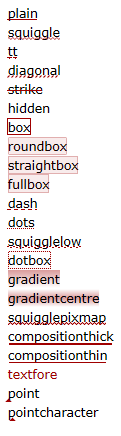

|
Документация SciTE |
| Документация FAQ Регулярные выражения SciTE Extension LUA SciTE Director Команды SciTE и Scintilla Сборка Ru-Board Ядро SciTE-Ru Shell SciTE Helper История |
Перед вами не просто перевод оригинальной документации SciTE.
Данный документ раскрывает многие вопросы гораздо шире и полнее оригинала. Исправлены многочисленные неточности и несуразности. Часть определений переписана заново.
Надеемся, что изучение этого документа принесет вам множество новых открытий!
Текст содержит элементы, выделенные форматированием, например:
"Настройки | Консоль - сбоку" - команда меню SciTE
command.subsystem: - параметр (переменная) из файла настроек SciTE
windows - значение параметра
-open:my file.txt - примеры кода
Данная возможность... - функции, работающие только в Windows
Данная возможность... - функции, работающие только в GTK
Данная возможность... - функции, имеющиеся только в SciTE-Ru
[т.е. команда будет выполнена...] - примечания переводчика
Дадим определения некоторым специфическим терминам, часто встречающимся в тексте документации:
Лексер (lexer) - программный модуль для анализа и обработки конкретного языка программирования. Лексеры подобны плагинам, и пишутся, в основном, независимыми разработчиками. После компиляции код лексера размещается в файле SciLexer.dll, а все его настройки обычно выносятся в отдельный файл свойств. Процесс добавления нового лексера описан в "Add a lexer to Scintilla and SciTE".
В SciTE редактирование текста осуществляется так же, как и в большинстве редакторов Windows или Macintosh. При этом в SciTE добавлена функция автоматической подсветки синтаксиса. Одновременно в SciTE может быть открыто множество файлов, однако на экране будет отображен только один из них. Исходная конфигурация SciTE не разрешает открывать более одного файла одновременно, однако эту особенность можно обойти, изменив значение свойства buffers. Прямоугольные области текста в SciTE можно выделить с помощью мыши, удерживая при этом клавишу Alt (в Windows) или Ctrl (в GTK).Клавиша модификатора, используемая в GTK, может быть изменена с помощью свойства rectangular.selection.modifier.
SciTE имеет две панели - панель редактирования и панель вывода. Панель вывода находится либо снизу панели редактирования, либо справа от от нее. По умолчанию размер панели вывода равен нулю, однако путем перетаскивания разделителя между двумя панелями его можно увеличить. Панель вывода можно вызвать используя команду "Вид | Окно консоли" (View | Output - F8). Для того чтобы поместить панель вывода сбоку от панели редактирования, можно использовать команду "Настройки | Консоль - сбоку" (Options | Vertical Split).
SciTE может исполнять команды для компиляции или запуска редактируемых файлов, перенаправляя вывод этих команд на панель вывода.
К примеру, если у вас на компьютере установлен Python, откройте новый документ и напечатайте там:
print "Hi"
Сохраните документ как printhi.py.
Теперь к открытому во вкладке файлу будет применена подсветка синтаксиса, поскольку SciTE использует расширение файла при выборе стиля его оформления [если задан параметр default.file.ext, то вновь созданный файл будет подсвечиваться и до сохранения, в соответствии с заданным расширением]:
print "hi"
Запустите команду "Tools | Выполнить" (Tools | Go - F5).
На экране появится панель вывода (если её до этого не было) со следующим текстом:
>python -u printhi.py hi >Exit code: 0
В первой синей строке SciTE показывает, какую команду он использовал для запуска программы. Вторая чёрная строка представляет собой результат исполнения программы на Python. В последней же синей строке SciTE сообщает о завершении программы и отображает код её завершения. Если код завершения программы равен нулю, это значит, что исполнение программы прошло успешно.
SciTE частично понимает те сообщения об ошибках, которые выдают Python, GCC, Visual C++, Borland C++, PHP и другие инструменты, имеющие такой же формат вывода сообщений, как вышеперечисленные. Для того чтобы убедиться в этом, сделайте в написанном на Python файле ошибку, добавив вторую строку и получив следующее:
print "hi" mistake
Запустите команду "Tools | Выполнить" (Tools | Go - F5). Результат будет выглядеть примерно так:
>python -u printhi.py hi Traceback (innermost last): File "printhi.py", line 2, in ? mistake NameError: mistake >Exit code: 1
В таком простом примере, как этот, найти ошибку несложно, однако в более крупном файле можно использовать команду "Tools | Следующее сообщение" (Tools | Next Message - F4). При выполнении этой команды первое сообщение об ошибке на панели вывода выделяется желтым фоном, а в окне редактирования для соответствующей строки отображается индикатор ошибки. Курсор перемещается на эту строку в окне редактирования. При этом содержимое окна редактирования при необходимости прокручивается, с тем, чтобы отобразить нужную строку. Теперь SciTE выглядит таким образом:

В большинстве случаев SciTE обрабатывает как имя файла, так и номер строки в сообщении об ошибке, поэтому, если ошибки произошли в другом файле (например, в заголовочном файле), он может открыть и его. Эта функция не работает, если в имени файла содержатся пробелы или "..".
Если исполнение команды оказалось неудачным и занимает слишком много времени, для её завершения можно воспользоваться командой "Tools | Остановить выполнение" (Tools | Stop Executing - Ctrl+Break).
Команды меню "Tools" могут быть выполнены в различных режимах SciTE, которые определяются параметром command.subsystem. Различные подсистемы поддерживаются на Windows, GTK и OS X. При запуске команды без параметра command.subsystem, используется заданная по умолчанию подсистема - 0.
| Windows | ||
|---|---|---|
| 0 | console | Это - значение по умолчанию и предназначено для запуска консольных программ. В результате запуска системное окно консоли не появляется, а весь вывод программы перенаправляется во встроенную консоль (панель вывода) SciTE. Возможно, что для отдельных приложений вам потребуется перенаправить весь ввод в программу, и добавить к выводу в консоль SciTE сообщения об ошибках. Это можно осуществить с помощью перенаправления стандартных потоков StdIn и StdErr:
command.5.*=CMD /C ruby $(FileNameExt) < con: > con: 2>&1 |
| 1 | windows | Запуск приложений в этом режиме приводит к открытию их собственного окна (или открытию системного окна консоли для консольных приложений). Если вы хотите анализировать вывод консольного приложения, то вам необходимо что-то предпринять для предотвращения автоматического закрытия окна при завершении работы команды (Обычно это осуществляется коррекцией pif-файла или добавлением команды pause в конец пакетного файла). |
| 2 | shellexec | Запуск программы осуществляется с помощью функции Windows ShellExecute (т.е. с помощью программы, ассоциированной с заданным расширением).Функция ShellExecute является хорошим способом для открытия HTML и подобных файлов, поскольку обрабатывает их так же, как если бы они были открыты пользователем из ОС (т.е. использует именну ту программу, которую назначил для открытия этих файлов пользователь). |
| 3 | lua director |
В данном случае, строка запуска трактуется как команда Lua и её запуск осуществляется посредством вызова встроенного в SciTE обработчика LUA-скриптов.
Параметр sybsystem:director предназначен для отправки комманд SciTE Director Interface. command.5.*=quit: не вызовет закрытие SciTE, как ожидалось.command.mode.5.*=subsystem:director Eё выполнение вызовет появление строки с ошибкой в окне консоли "Lua: error checking global scope for command". Однако SciTE всетаки отправит команду " quit:", которую сможет прочесть любая программа, понимающая SciTE Director Interface. |
| 4 | htmlhelp | Строка запуска обрабатывается подобно тому, как это осуществляет программа HtmlHelp (hh.exe), служащая для запуска справочных файлов в формате CHM (*). |
| 5 | winhelp | Строка запуска обрабатывается подобно тому, как это осуществляет программа WinHelp (winhlp32.exe), служащая для запуска справочных файлов в формате HLP (*). |
| 7 | immediate | Внутренний скрипт, который выполняется немедленно, а не встаёт в очередь. |
* При использовании значений 4 и 5 SciTE не вызывает непосредственно программу hh.exe (winhlp32.exe), а открывает файлы справки собственными средствами, позволяющими в командной строке задать не только имя файла справки, но и искомое ключевое слово. При этом команда будет состоять из 2 частей, разделенных символом "!", где первая часть представляет собой искомое ключевое слово, а вторая - имя файла справки. Например, так:
command.3.*=$(CurrentWord)!$(SciteDefaultHome)\help\script56.chm Естественно, поиск по ключевомоу слову будет работать только с теми файлами справки, в которых присутствует индекс.
|
||
| GTK и OS X | ||
|---|---|---|
| 0 | console | Исполняет программу и ожидает её завершения, перенаправляя результат в панель вывода. |
| 2 | shellexec | Выполняет программу в фоновом режиме. |
| 3 | lua director | Lua или director расширение. |
| 7 | immediate | Внутренний скрипт, который выполняется немедленно, а не встаёт в очередь. |
Параметры командной строки для запуска SciTE включают имена файлов, команды и значения, которые будут присвоены свойствам SciTE. Команды и свойства начинаются с символа "-". В свойствах используется тот же синтаксис, что и в файлах настроек. Кроме того, значения свойств, заданные в командной строке, перекрывают соответствующие значения в файлах настроек. Если свойству не было присвоено никакого значения, то по умолчанию оно равняется 1. Параметры, значения которых содержат пробелы, необходимо заключать в двойные кавычки, однако кавычки должны обрамлять весь параметр, а не только значение. Поэтому параметр в таком виде: "-open:my file.txt" будет работать, а в таком: open:"my file.txt" - нет. В Linux доступно стандартное использование кавычек в оболочке. Параметр "-p" заставляет SciTE печатать файл, а затем завершать работу.
Под Windows:
Функция параметров командной строки "-" и "--" (без кавычек) заключается в том, чтобы считывать поток stdin в последнюю вкладку ("-") или в панель консоли ("--") SciTE.
C помощью параметра командной строки "-@" (без кавычек) можно считывать имена файлов из stdin и открывать эти файлы.
Примечание: Если при считывании потока stdin в панель вывода значение свойства split.vertical равно 0, высота панели вывода увеличивается до максимального размера. Если значение свойства split.vertical равно 1, панель вывода увеличивается примерно до половины ширины экрана.
Примечание: Если поток stdin не был перенаправлен в SciTE, все приведенные выше параметры игнорируются.
Пример использования ввода по stdin (содержимое файла test.txt считывается в окно консоли SciTE):
SciTE открывает все файлы, указанные в списке filelist.txt:
Такой пример:
запускает SciTE, открывает файл ScintillaGTK.cxx, присваивает параметру save.recent значение 1, а в качестве основного шрифта использует MS Gothic размером 11.
Группу свойств можно сохранить в качестве файла настроек (с расширением ".properties"), а в командной строке использовать команду import:
В настоящее время доступно очень мало команд, однако в будущем их число увеличится:
| Команда | Аргумент |
|---|---|
| close: | |
| cwd: | изменение рабочего каталога |
| find: | искомый текст |
| goto: | номер строки [,номер столбца] |
| open: | имя файла |
| loadsession: | имя файла |
| quit: | |
| replaceall: | search text\000replacement text |
| saveas: | имя файла |
В командах можно использовать escape-последовательности в стиле C:
| Escape-последовательность | Значение |
|---|---|
| \\ | обратный слеш |
| \a | сигнал |
| \b | забой |
| \f | прогон страницы |
| \n | новая строка |
| \r | возврат каретки |
| \t | табуляция |
| \v | вертикальная табуляция |
| \<ooo> | восьмеричное значение, оформленное одной, двумя или тремя цифрами |
| \x<hh> | шестнадцатеричное значение, оформленное двумя цифрами или буквами от A до F |
Открывает файл /big/icon.txt:
C:\Program Files\SciTE\SciTEDoc.html и переходит к 123-й строке:Параметры командной строки обрабатываются слева направо в два приема, поскольку, во-первых, для открытия файлов необходим пользовательский интерфейс, а во-вторых, пользовательский интерфейс отобразится только после того, как для него будет задан ряд свойств. На первом этапе обработка аргументов продолжается до того, как будет открыт первый файл. Во время второго этапа обрабатываются остальные аргументы.
Таким образом, если есть необходимость применить к файлу, например, команду find: или goto:, нужно поместить её после имени файла, и SciTE откроет файл перед тем, как выполнить команду.
Под Windows:
Если какое-нибудь имя файла в командной строке совпадает с названием каталога, появляется диалог "Открыть файл" (появление диалога зависит от значения свойства "open.dialog.in.file.directory").
Если значение свойства "buffers" больше единицы, а имя файла совпадает либо с существующим файлом, либо, посредством поиска по групповому символу, с одним или более файлами, количество загружаемых совпадающих файлов не может быть больше заданного в свойствах "buffers" значения. Каталоги в этом случае совпадением не считаются.
Если имя файла содержит расширение, перед которым опционально указан путь к этому файлу, и ни один из существующих файлов не удовлетворяет этому условию, появляется диалог "Открыть файл", в котором заданное расширение используется в качестве фильтра.
Если имя файла не содержит расширения, то для того, чтобы найти существующий файл, этому файлу при помощи свойства "source.default.extensions" присваивается расширение по умолчанию.
SciTE может использовать от 1 до 100 вкладок, каждая из которых содержит файл. По умолчанию количество вкладок равно 1, при этом вкладки полностью отключаются. Если вкладок несколько, то для переключения между ними можно использовать меню "Вкладки" (Buffers), либо выбрать определенное имя файла, либо использовать команды "Предыдущая" (Previous - F6) и "Следующая" (Next - Shift+F6). [В Windows также можно использовать Ctrl+Tab/Ctrl+Shift+Tab]. Для доступа к первым десяти вкладкам можно использовать сочетания клавиш Alt+[номер вкладки], где [номер вкладки] - числа от 0 до 9 (0 соответствует десятой вкладке).
Вкладки отображается для каждого буфера в панели вкладок, хотя это может быть отключено через пункт меню "Вид | Вкладки". Вкладка может быть закрыта, щелчком по ней средней кнопкой мыши.
Использование большого количества вкладок может создать определенные проблемы, так как количество файлов, которые могут отобразить некоторые меню, ограничено, и файлы, превышающие эту планку, будут недоступны.
Навигация по вкладкам в Ru-Board версии - при прокрутке скроллера, если курсор мыши поверх панели вкладок:
- нажат Ctrl - активируется соседняя вкладка;
- нажат Shift - активная вкладка меняется местами с соседней;
- нажаты и Ctrl и Shift - активируется первая или последняя вкладка.
Когда все доступные вкладки заняты файлами, то при открытии новых файлов вкладки будут использоваться повторно, для чего может потребоваться сохранение ранее содержащихся в этих вкладках файлов. В этом случае на экран будет выведено предупреждение для подтверждения действий пользователем.
Сессия представляет собой список файлов. Все вкладки, отображенные на экране, можно сохранить как сессию, чтобы в будущем их можно было быстро загрузить. Сессии сохраняются как файлы настроек с расширением ".session".
Для загрузки/сохранения сессий используются команды меню "Файл | Загрузить сессию" (File | Load Session) и "Файл | Сохранить сессию" (File | Save Session). При помощи свойства SciTE save.session можно включить/отключить автозагрузку последней сессии.
При установке save.session=1 SciTE при закрытии автоматически сохраняет список открытых в текущей сессии файлов в файле SciTE.session, расположенном по умолчанию в каталоге, определяемом переменной окружения %USERPROFILE% (обычно это c:\Documents and Settings\username\SciTE.session).
По этому же пути SciTE и загружает сессию при следующем старте (при save.session=1).
Файл сессии хранит информацию об имени файла и позиции курсора, а также (при session.bookmarks=1) о расположении меток и (session.folds=1) о состоянии фолдинга (сворачивания кода).
Свойство buffers, равное 0, отключает управление сессиями.
Загрузка ранее сохраненной сессии закрывает открытые вкладки, однако при этом вы не потеряете отредактированные вами данные, поскольку программа вначале предложит сохранить измененные файлы.
Открытие файла из командной строки аннулирует действие свойства save.session. Если вы запускаете SciTE посредством загрузки файла из командной строки, прошлая сессия не восстановится, даже если свойство save.session равно 1. Таким образом, свойство save.session является безопасным для использования в том смысле, что вы не откроете несколько файлов, если хотите открыть только один. Однако, если вы хотите, чтобы файлы открывались в вашем последнем сеансе, вы можете сделать это, установив load.session.always и check.if.already.open на 1.
Файл, открываемый с помощью командной строки, уничтожает предыдущую сессию. Чтобы этого не происходило, можно поступить следующим способом: сначала запустить SciTE (SciTE при save.session=1 автоматически откроет предыдущую сессию), а затем уже добавить в SciTE файл любым удобным способом (перетаскиванием, через меню "Файл" или с помощью командной стоки). В этом случае открываемый файл не уничтожит текущую сессию, а добавится к ней.
При установке session.bookmarks=1 и session.folds=1 бумарки и состояние фолдинга всех открытых файлов будут сохранены в файле SciTE.session, откуда затем будут восстановлены при следующем старте.
В настоящий момент SciTE поддерживает подсветку синтаксиса в следующих языках (* означает поддержку сворачивания кода):
Для некоторых из вышеприведенных языков были настроены команды запуска и компиляции. Однако целесообразно пересмотреть установленные настройки, с тем чтобы изменить их в соответствии с вашими предпочтениями.
Некоторые языки были включены, но закомментированы в глобальных опциях. Это позволило ограничить длину меню до разумных пределов. Для того чтобы воспользоваться этими языками, необходимо удалить символы комментариев '#'.
Язык файла определяется по расширению этого файла, однако с помощью меню "Подсветка" (Language) можно установить другой язык. В свою очередь, меню "Подсветка" (Language) можно изменить с помощью свойства menu.language.
Для поиска и замены можно использовать либо диалоги, либо панели, причем диалоги используются по умолчанию. Панели похожи на те, что есть в веб-браузерах, они появляются в нижней части окна, они меньше по размеру и меньше отвлекают внимание, чем диалоги. Они задаются свойствами find.use.strip и replace.use.strip.
В SciTE возможен поиск и замена текста как в текущем, так и во всех открытых документах. Есть возможность выбрать направление поиска, учитывать регистр, использовать регулярные выражения.
Переход по результатам поиска можно осуществлять с помощью клавиши F3 (Shift+F3 - в обратном направлении). При достижении конца документа поиск автоматически продолжится с его начала (и наоборот - в зависимости от направления).
Для поиска и замены управляющих символов можно использовать си-подобные escape-последовательности.
При использовании регулярных выражений можно использовать нумерованные подстроки, которые в шаблоне поиска выделяются с помощью круглых скобок, а в шаблоне замены подставляются в виде \0..\9.
Регулярные выражения в SciTE поддерживают все основные метасимволы, но не поддерживают символ новой строки \n [решение для выхода из этой ситуации описано в FAQ].
В Windows нажатие Shift+Enter, когда фокус находится в поле ввода текста, приведет к поиску в направлении, противоположном текущему, поэтому обычно выполняется поиск в обратном направлении.
SciTE использует как собственные, так и заданные в движке Scintilla клавиатурные команды. Полный список команд и соответствующих им шорткатов вы можете увидеть в этом документе.
SciTE по большей части придерживается установленных в Windows и GTK стандартов. Клавиши навигации (стрелки, page up/down, home и end) поддерживают расширение или сужение области выделения при удержании Shift, а также выделение прямоугольных областей при удержании Shift и Alt. Некоторые клавиши могут быть недоступны в ряде национальных раскладок или в том случае, когда они контролируются системой (например, менеджером окон в GTK).
Для задания собственной клавиатурной комбинации можно использовать параметр user.shortcuts, параметры command.shortcut (для назначения горячей клавиши на пункт меню Tools) или параметр menu.language (для назначения горячей клавиши на пункт меню Подсветка). Обратите внимание, что функции клавиши Home настраиваются при помощи опции vc.home.key.
Клавиатурные эквиваленты команд меню указаны в самом меню. Далее перечислены команды, не имеющие эквивалента в меню:
| Увеличить размер текста | Ctrl+Keypad+ |
| Уменьшить размер текста | Ctrl+Keypad- |
| Восстановить размер текста по умолчанию | Ctrl+Keypad/ |
| Цикличное переключение между открытими файлами | Ctrl+Tab |
| Добавить отступ | Tab |
| Убрать отступ | Shift+Tab |
| Удалить слово слева от курсора | Ctrl+BackSpace |
| Удалить слово справа от курсора | Ctrl+Delete |
| Удалить строку слева от курсора | Ctrl+Shift+BackSpace |
| Удалить строку справа от курсора | Ctrl+Shift+Delete |
| Перейти к началу документа | Ctrl+Home |
| Выделить фрагмент от курсора до начала документа | Ctrl+Shift+Home |
| Перейти к началу строки | Alt+Home |
| Выделить фрагмент текста до начала строки | Alt+Shift+Home |
| Перейти к концу документа | Ctrl+End |
| Выделить фрагмент от курсора до конца документа | Ctrl+Shift+End |
| Перейти к концу строки | Alt+End |
| Выделить фрагмент текста до конца строки | Alt+Shift+End |
| Свернуть/Развернуть код | Ctrl+Keypad* |
| Установить/Удалить метку | Ctrl+F2 |
| Перейти к следующей метке | F2 |
| Выделить до следующей метки | Alt+F2 |
| Найти выделенное | Ctrl+F3 |
| Найти выделенное в обратном порядке | Ctrl+Shift+F3 |
| Прокрутить вверх | Ctrl+Up |
| Прокрутить вниз | Ctrl+Down |
| Вырезать строку | Ctrl+L |
| Скопировать строку | Ctrl+Shift+T |
| Удалить строку | Ctrl+Shift+L |
| Поменять строки местами | Ctrl+T |
| Дублировать текущую строку или выделенный текст | Ctrl+D |
| Найти следующее вхождение директивы препроцессора, пропуская вложенные | Ctrl+K |
| Выделить содержимое до следующей директивы препроцессора | Ctrl+Shift+K |
| Найти предыдущее вхождение директивы препроцессора, пропуская вложенные | Ctrl+J |
| Выделить содержимое до предыдущей директивы препроцессора | Ctrl+Shift+J |
| Предыдущий абзац. Удерживание клавиши Shift активирует выделение | Ctrl+[ |
| Следующий абзац. Удерживание клавиши Shift активирует выделение | Ctrl+] |
| Предыдущее слово. Удерживание клавиши Shift активирует выделение | Ctrl+Left |
| Следующее слово. Удерживание клавиши Shift активирует выделение | Ctrl+Right |
| Предыдущая часть слова. Удерживание клавиши Shift активирует выделение | Ctrl+/ |
| Следующая часть слова. Удерживание клавиши Shift активирует выделение | Ctrl+\ |
| Выделение прямоугольного блока | Alt+Shift+курсорные |
| Расширение прямоугольного выделения до начала строки | Alt+Shift+Home |
| Расширение прямоугольного выделения до конца строки | Alt+Shift+End |
В Windows поиск можно выполнить в обратном направлении, используя Shift+Enter в панелях или диалоговых окнах «Найти» или «Заменить».
В SciTE можно осуществить быструю замену коротких сокращений (аббревиатур) на строку текста или даже на целый блок кода. Чтобы использовать аббревиатуру, надо набрать ее, а затем выполнить команду меню "Правка | Расшифровать сокращение" (Ctrl+B) (для моментальной замены) или "Вставить сокращение..." (Ctrl+Shift+R) (для выбора из раскрывающегося списка). Аббревиатура заменяется расшифровкой, заданной в файле аббревиатур abbrev.properties. Файл аббревиатур можно открыть с помощью команды меню "Настройки | Открыть файл настройки сокращений" и добавить туда свои аббревиатуры. Помимо файла аббревиатур, заданного по умолчанию, для определенных расширений файлов можно создать свои файлы аббревиатур.
Каждая строка в файле аббревиатур выглядит следующим образом: "аббревиатура=расшифровка".
Аббревиатуры могут содержать любые символы, включая символы верхней половины ASCII. Исключаются лишь управляющие символы и, конечно, символы возврата каретки (CR) и перевода строки (LF). У аббревиатур есть такие же ограничения, как и в файлах настроек: они не могут начинаться с решетки # (т.к. такая строка будет истолкована как комментарий), пробела (хотя могут содержать пробелы внутри) и табуляции, а также не могут содержать внутри символ "=".
Длина аббревиатур ограничена 32 символами, которых, надо полагать, вполне достаточно для аббревиатур. Длина расшифровок не ограничена.
Расшифровки могут содержать символы новой строки "\n" и позиции каретки "|". Чтобы использовать буквальный символ "|", нужно набрать "||". Вместе со SciTE поставляется файл аббревиатур, в котором содержится несколько простых примеров.
При расшифровке аббревиатуру не обязательно отделять от ранее набранного текста.
Т.е. если вы в файле сокращений задали e=é, и в тексте "eve|nt" нажали Ctrl+B (символ | указывает позицию курсора), то "event" превратится в "evént".
Если одна из аббревиатур является окончанием второй, то расшифрована будет только более короткая последняя часть.
Т.е. если вы задали 2 сокращения text=TextFile и rtext=ReadingText, то после набора слова "rtext|" (символ | указывает позицию курсора) и нажатия на Ctrl+B "rtext" превратится в "rTextFile", а не в "ReadingText", как ожидалось.
SciTE-Ru предоставляет пользователям на порядок больше возможностей по работе с аббревиатурами. В списки сокращений можно добавлять пользовательские переменные: %SEL% (выделенный текст), %CLP% (текст из буфера обмена), %[имя_переменной]% (значение внутренней переменной SciTE, например, CurrentWord, FileNameExt, SciteDefaultHome и т.п.), %GUID% (уникальный GUID нового объекта), что позволяет создавать высокоинтеллектуальные шаблоны замены.
Другая доработка позволяет использовать директиву import в файлах аббревиатур.
Подробное описание этих доработок можно прочесть на этой странице.
SciTE поддерживает фолдинг кода для многих языков (см. выше список языков, которые поддерживает SciTE). Свёртка основывается на отступах в коде на Python и на операторных скобках в других языках. [Операторные скобки - это буквальные скобки или команды, определяющие в языке программирования блок команд или составную инструкцию, воспринимаемую как единое целое, как одна команда. Например, If и End If в VBScript.]
Для того чтобы свернуть или развернуть код, необходимо щелкнуть мышкой по маркеру в местах сворачивания:
Совет: Чтобы открыть большой родительский блок со всеми свёрнутыми дочерними блоками, закройте его с Ctrl+щелчок мышью (на крестике свёртки), после чего откройте его обычным кликом. Открывая дочерний блок, вы увидите, что подблок дочернего блока свёрнут; если хотите, чтобы он при этом был открыт – откройте его, зажав Shift.
Большую часть возможностей SciTE можно перенастроить посредством редактирования файлов настроек.
Существует четыре вида файлов настроек. В порядке убывания приоритета:
SciTE.properties. Этот файл может быть расположен в том же каталоге, что и редактируемый файл.SciTEDirectory.properties, который может находиться в том же каталоге, что и редактируемый файл, или в родительском каталоге.SciTEUser.properties (под Windows) и .SciTEUser.properties (под GTK).SciTEGlobal.properties.Настройки локального файла настроек имеют преимущество перед настройками файла каталога, которые, в свою очередь, перекрывают настройки, содержащиеся в пользовательском файле, а последние перекрывают настройки глобальных файлов.
В Windows файл глобальных настроек расположен в папке, где находится исполняемый файл. Файл пользовательских настроек разыскивается в каталоге профиля пользователя, как задано в переменной окружения USERPROFILE. Если переменная USERPROFILE не задана, поиск ведется в каталоге, где расположен исполняемый файл. В GTK файл пользовательских настроек находится в домашнем каталоге пользователя, а глобальные настройки - в каталоге, заданном в момент сборки (обычно /usr/share/scite). Если задана переменная окружения SciTE_HOME, то и в Windows, и в GTK глобальный файл и файл пользовательских настроек находятся именно там.
Файл настроек каталога можно использовать в качестве файла опций проекта там, где пользовательские команды и команды compile и build должны функционировать аналогичным образом как в корневом каталоге, так и в подкаталогах проекта. Преимущество такого решения состоит в том, что таким образом локальные файлы настроек в подкаталогах можно заменить всего лишь одним файлом настроек, расположив его в корне проекта. Анализ файла настроек каталога отключается по умолчанию. Для того чтобы им можно было пользоваться, необходимо в пользовательском или глобальном файле настроек установить переменную properties.directory.enable в 12.
Настройки по умолчанию "зашиты" в код SciTE и редактор может работать вообще без единого файла настроек. В SciTEGlobal.properties находятся настройки, рекомендуемые распостранителем пакета для всех пользователей. Если пользователя не устраивают рекомендуемые настройки или он хочет их дополнить, то он может либо изменить их, либо создать файл SciTEUser.properties со своими настройками, которые автоматически перекроют одноименные параметры в SciTEGlobal.properties. Более подробно про файлы настроек можно прочитать здесь. Основной функцией локальных файлов настроек является настройка команд Compile, Build и Go для работы с файлами каталога. К примеру, если в большинстве случаев пользователь использует компилятор javac из Java Development Kit, в файле SciTEGlobal.properties Устанавливается команда для компиляции файлов .java в javac. Если же для файлов одного из каталогов ему нужен компилятор jvc, тогда в файле SciTE.properties, расположенном в этом каталоге, Устанавливается компилятор jvc.
В меню Настройки (Options) есть команды для открытия каждого файла настроек.
Файлы настроек имеют примерно тот же формат, что и файлы настроек языка Java, в которых используется простой текстовый формат. Строки, начинающиеся с символа '#' являются комментариями и игнорируются, также как и пустые строки. Остальные строки имеют форму
переменная=значение.
При длинных значениях в конце строки ставится символ '\', указывающий, что продолжение этого значения находится на следующей строке. Необходимо обращать внимание на пробелы. Так, x =1 Устанавливает переменную из двух символов "x ".
При помощи конструкции $(variablename) можно подставить значение переменной, где variablename - имя переменной, в значение которой можно включить значение другой переменной. В качестве переменных в этой конструкции помимо заданных ранеё в файле(-ах) можно использовать переменные окружения, а также внутренние переменные SciTE:
| Имя | Значение |
|---|---|
| FilePath | полный путь к текущему файлу |
| FileDir | папка текущего файла без замыкающего слеша |
| FileName | базовое имя (без расширения) текущего файла |
| FileExt | расширение текущего файла |
| FileNameExt | $(FileName).$(FileExt) |
| Language | имя текущего лексера |
| BufferNumber | номер буфера текущего файла |
| SessionPath | полный путь к текущей сессии |
| CurrentSelection | выделенный текст |
| CurrentWord | равно CurrentSelection, если выделение непусто, иначе слово с кареткой внутри слова или около него |
| CurrentWordCharacters | перечень символов из которых строятся слова текущего языка |
| Replacements | количество замен, сделанное последней командой Replace |
| SelectionStartColumn | столбец, с которого начато выделение |
| SelectionStartLine | строка, с которой начато выделение |
| SelectionStart | позиция, с которой начато выделение |
| SelectionEndColumn | столбец, где завершается выделение |
| SelectionEndLine | строка, где завершается выделение |
| SelectionEnd | позиция, где завершается выделение |
| CurrentMessage | последнее выделенное выходное сообщение |
| SciteDefaultHome | папка с файлом глобальных настроек и файлом локализации интерфейса (обычно совпадает с местоположением scite.exe) |
| SciteUserHome | папка с файлом пользовательских настроек |
| SciteDirectoryHome | папка с файлом настроек каталога |
| APIPath | путь к текущему api файлу |
| AbbrevPath | путь к текущему файлу сокращений |
| ScaleFactor | коэффициент масштабирования экрана со значением по умолчанию 100 |
| Appearance | использует ли система светлую (0) или темную (1) тему |
| Contrast | 1, когда система находится в режиме высокой контрастности, иначе 0 |
Значения CurrentSelection и CurrentWord обновляются только перед вызовом команды меню.
В качестве значения определенных параметров может использоваться маска имени файла или групповой шаблон для файлов с различными расширениями. Например, переменная lexer может быть задана как для определенного файла, так и для группы файлов на основании группового символа:
lexer.makefile=makefile означает то, что lexer под названием "makefile" должен использоваться для файлов с именем "makefile".
lexer.*.cxx=cpp означает то, что lexer под названием "cpp" должен использоваться для файлов с расширением "cxx".
Подстановка переменной происходит с левой стороны от файлового шаблона и выглядит подобным образом:
Сопоставление подстановочных знаков обрабатывает '?' соответствует любому символу, а '*' соответствует любому количеству символов. Групповой шаблон действует только когда он находится слева от определения группы файлов, то есть "*.mak" подойдёт для "proj.mak", но "Makefile*" не подойдёт для "Makefile.in". А шаблону "*.x?l" будут соответствовать и "data.xml" и "transform.xsl".
Файлы ".properties" могут быть в любой кодировке, однако определённые значения свойств могут подразумевать определённую кодировку. Для имён файлов, команд и текста пользовательского интерфейса – это UTF-8, так что вероятно гораздо легче редактировать файлы ".properties" как UTF-8, вставляя строки кода как будет описано далее. Другие свойства могут подразумевать последовательность байтов (например, word.characters.filepattern) или неявную кодировку (напр., keywords.filepattern для совпадения с кодировкой документа), так что может быть лучше редактировать эти настройки используя не UTF-8 кодировку. Там, где нужны оба, и UTF-8, и не UTF-8 значения, можно использовать два файла и выражение import для включения содержимого одного из файлов в другой.
Более подробно о паттернах в файлах настроек можно прочитать в этой статье.
Цвета определяются так же, как HTML, с символом «#», за которым следуют 6 или 8 шестнадцатеричных цифр #RRGGBB или #RRGGBBAA, определяющие значения красного, зеленого, синего и альфа-канала цвета. Альфа — это степень прозрачности, где 00 — полностью прозрачный, а FF — полностью непрозрачный. Предполагается, что шестизначный цвет полностью непрозрачен. В настоящее время только несколько настроек могут быть установлены полупрозрачными с 8-значным значением.
Оператор import подключает файл настроек, как если бы в данное место был вставлен текст. Путь к импортируемому файлу настроек может быть задан как абсолютный либо как относителный к базовому файлу, и иметь расширение properties. Следовательно, оператор import Lua в файле c:\os\scite\bin\SciTEGlobal.properties импортирует файл c:\os\scite\bin\Lua.properties.
Любой оператор import в импортируемом файле будет брать путь относительно каталога исходного (а не текущего) файла.
Импортированные файлы не являются границами области видимости: свойства могут быть переопределены в другом файле. Таким образом, если файл содержит и import cplusplus, и import java, и style.cpp.1=fore:$(comment.color), то cplusplus.properties содержит comment.colour=#800000 и java. properties содержит comment.color=#008000, тогда последнее определение выигрывает и становится активным для определений в базовом файле, а также любых определений в cplusplus.properties и java.properties.
C помощью оператора if можно выборочно применять отдельные параметры настройки. Условие if MY_VALUE считается выполненным, если параметру MY_VALUE было присвоено значение 1. Если условие выполнено, то идущим далее с отступом от начала строки параметрам настройки присваиваются заданные значения. Действие условия распостраняется до первого параметра, записанного с начала строки без отступа. В теле условного оператора допустимы только простые присваивания. Оценка операторов if происходит во время чтения конфигурационного файла, а не во время выполнения программы. При изменении свойств требуется принудительная перезагрузка файлов конфигурации.
Обычно оператор if используется для подключения определенных блоков в файлах настроек в зависимости от значения переменных PLAT_GTK, PLAT_WIN или PLAT_MAC, с помощью которых SciTE идентифицирует используемую ОС.
Функция "=" сравнивает две строки (разделенные знаком ";") и, если они совпадают, возвращает "1", иначе "0". Чтобы проверить, равно ли значение параметра "Status" строке "2":
Если $(PLAT_WIN) равно "1", то устанливаем цвет курсора #00FF00. Если $(Appearance) равно "1", то устанливаем цвет курсора #FFFFFF.
Файлы локальных настроек и файлы настроек каталогов могут проверять значение текущего файла в тестах if с помощью $(FilePath), $(FileDir), $(FileName), $(FileExt), $(FileNameExt) и $(RelativePath).
Функцию "*" можно использовать для сбора значений всех переменных, начинающихся с определенного префикса.
находит все переменные, начинающиеся с «language.» и присваивает это значение параметру all.languages. Это можно использовать для объединения настроек из многих файлов для элементов пользовательского интерфейса, таких как меню «Подсветка». На уровне файла свойств (локальный, каталог, пользовательский, глобальный) список упорядочивается в алфавитном порядке по имени переменной, что позволяет в некоторой степени контролировать порядок.
Оператор match похож на if, но неявно сопоставляет шаблоны с $(RelativePath), допуская подстановочные знаки *, ?; классы символов [a-z%]; и вариации {cpp,cxx,ixx}. Можно использовать только разделители каталогов "/" в стиле Unix, поскольку "\" можно использовать в качестве кавычек. Если в шаблоне нет «/», то перед ним добавляется «**/», чтобы разрешить сопоставление в любом подкаталоге. Между "match" и шаблоном должен быть ровно один пробел, а завершающие пробелы удаляются. Добавьте оператор match в файлы локальных настроек и настроек каталогов, чтобы упростить настройку свойств для определенных файлов. Добавьте $(RelativePath) для пути от каталога свойств каталога до текущего файла.
SciTE автоматически определяет схему кодирования, используемую для файлов в кодировке Юникод, которые начинаются с метки порядка байтов (Byte Order Mark, BOM). Распознаются также кодировки UTF-8 и UTF-16, в том числе и варианты кодировки UTF-16 - Little Endian и Big Endian.
Файлы в кодировке UTF-8 распознаются и тогда, когда они содержат маркер кодирования (coding cookie) в одной из первых двух строк. Маркер кодирования имеет вид "coding: utf-8" ("coding", вслед за которым следуют символ ':' или '=', символ пробела (опционально), кавычки (опционально), "utf-8") и обычно располагается в комментариях:
Если кодировка текущего файла не распознана как Юникод, то SciTE отображает текст в соответствии с установками параметров code.page и character.set.
Некоторые свойства доступны только под Windows или GTK.
|
position.left position.top position.width position.height position.maximize |
Задают первоначальный размер и позицию окна. Если эти переменные не заданы, первоначальный размер и позиция окна определяются системой. Если position.width=-1 или position.height=-1 или position.maximize=1 - окно развернуто до максимального размера. | ||||||||||||||||||||||||||||||||||
| position.tile | При установке position.tile=1 левая граница нового окна будет равна position.left + position.width первого окна (т.е. новое окно будет касаться правого края первого окна). Таким образом окна не будут перекрывать друг друга. Если position.left=0, а position.width равна половине ширины экрана, то два окна SciTE перекроют экран целиком, разделив его ширину между собой ровно пополам. |
||||||||||||||||||||||||||||||||||
| buffers | Устанавливает количество вкладок, каждая из которых может содержать открытый файл. Может принимать значение от 1 до 100. Значения, не входящие в этот диапазон, устанавливаются в его граничные значения. По умолчанию значение равно 1. При этом значении вкладки не отображаются. Данное значение считывается только из файлов глобальных настроек (т.е. из SciTEGlobal.properties, SciTEUser.properties, а также всех остальных файлов настроек, подключенных к названным с помощью директивы import). Поскольку данное значение считывается только один раз при запуске программы, необходимо перезапустить SciTE, чтобы изменение вступило в силу. |
||||||||||||||||||||||||||||||||||
| buffers.zorder.switching | Данная настройка Устанавливает порядок переключения между вкладками при нажатии комбинации Ctrl+Tab. Если задать значение 1, переключение будет происходить в том порядке, в котором вкладки открывались ранее. В противном случае переключение будет происходить по порядку номеров вкладок. |
||||||||||||||||||||||||||||||||||
| are.you.sure are.you.sure.for.build |
Если задать переменной are.you.sure значение 0, файл при закрытии будет сохраняться автоматически, не беспокоя пользователя вопросом о сохранении изменений. В этом случае отказаться от сохранения изменений можно, только если параметр buffers у вас отстутствует. Тогда, выбрав из меню команду для создания нового файла, можно заставить SciTE показать диалоговое окно с запросом о сохранении текущего (поскольку новый файл займет его место). SciTE автоматически сохраняет текущий файл перед выполнением, компиляцией или запуском других команд из меню "Tools". Установка are.you.sure.for.build=1 будет вызывать диалоговое окно с запросом о сохранении при выполнении этих команд. |
||||||||||||||||||||||||||||||||||
| save.all.for.build | Обычно перед выполнением команд "Compile", "Build" или "Go" SciTE сохраняет текущую вкладку. Чтобы сохранять все вкладки, задайте save.all.for.build=1. | ||||||||||||||||||||||||||||||||||
| representations | Sets up a different way of displaying particular characters. It contains a list of items separated by ','. An item may define the representation of a character or set an appearance or colour. A representation item contains a character followed by '=' and its representation text. Hexadecimal Unicode escapes may be used: '\x' followed by 2 hexadecimal digits, '\u' followed by 4, or '\U' followed by 8. Appearance items start with '!' followed by an optional appearance number, '0' for plain or '1' for blobs, '' for default. Colour items start with '#' followed by 6 (opaque), 8 (translucent), or 0 (default) hexadecimal digits. By default, representations are shown in the colour of the style of the original text. Appearance and colour items continue to affect following representation items until they are changed or reset. To specify the characters '\', '=', ',', '!', or '#' use an escape. Only single characters can be represented except for the special case of Windows line ends Carriage Return + Line Feed.
The following example shows 'π' as a blob 'Pi'; '₪' as a blob 'shekel(₪)'; and with View | End of Line turned on Carriage Return + Line Feed appears as translucent red text 'crlf'. representations=π=Pi,\u20AA=shekel(\u20AA),!0,#FF000090,\x0D\x0A=crlf . |
||||||||||||||||||||||||||||||||||
| view.whitespace view.indentation.whitespace |
При view.whitespace=1 будут видимы пробелы и знаки табуляции. При view.indentation.whitespace=0 будут скрыты пробелы и знаки табуляции, используемые в отступах строк. При view.indentation.whitespace=1 будут видимы пробелы и знаки табуляции, используемые в отступах строк. При view.indentation.whitespace=2 будут видимы пробелы и знаки табуляции только в отступах строк. |
||||||||||||||||||||||||||||||||||
| whitespace.fore whitespace.back |
Устанавливает цвета символов и фона для всех видимых пробелов и знаков табуляци, отменяя при этом цвета, заданные текущим лексером. | ||||||||||||||||||||||||||||||||||
| whitespace.size | Устанавливает размер, используемый для отображения всех видимых пробельных символов | ||||||||||||||||||||||||||||||||||
|
view.indentation.guides view.indentation.examine view.indentation.examine.filepattern highlight.indentation.guides |
При view.indentation.guides=1 отображаются пунктирные вертикальные линии в пределах отступа, заданного командой indent.size. При highlight.indentation.guides=1 выделяется относящаяся к скобке направляющая отступа (indentation guide), когда эта скобка выделена. При установке highlight.indentation.guides=1, и braces.check=1 установка курсора на одну из парных скобок будет окрашивать не только скобки, но и направляющую отступа, относящуюся к ним. Setting view.indentation.guides to 1 displays dotted vertical lines within indentation white space every indent.size columns. Setting view.indentation.examine to 1 to display guides within real indentation whitespace only, 2 according to the next non-empty line (good for Python) or 3 according to both the next and previous non-empty lines (good for most languages). Setting highlight.indentation.guides to 1 highlights the indentation guide associated with a brace when that brace is highlighted. |
||||||||||||||||||||||||||||||||||
| view.eol | Задайте этой переменной значение 1 с тем, чтобы отобразить символы конца строки, которые будут выглядеть как (CR), (LF) или (CR)(LF). Полезно при использовании файлов, созданных на другой операционной системе, с программным обеспечением, чувствительным к оформлению концов строк. |
||||||||||||||||||||||||||||||||||
| eol.mode |
Режим EOL по умолчанию (символы конца строки) зависит от платформы. Можно изменить этот режим, задав:
LF для формата UNIX и OS XCR для формата Macintosh до OS XCRLF для формата DOS/Windows
|
||||||||||||||||||||||||||||||||||
| eol.auto | Эта настройка перекрывает значение, заданное переменной eol.mode и выбирает последовательность символов конца строки на основании текущего содержимого открытого файла. При этом отдается предпочтение символу, который чаще всего используется в этом файле. | ||||||||||||||||||||||||||||||||||
| blank.margin.left blank.margin.right output.blank.margin.left |
С обеих сторон текста расположен пустой отступ, цвет которого совпадает с цветом фона текста. По умолчанию, размер этого отступа равен одному пикселю как для правой, так и для левой стороны. Однако с помощью данной настройки размер отступов можно изменить. Если установлено output.blank.margin.left, то оно переопределяет пустое blank.margin.left для панели вывода. | ||||||||||||||||||||||||||||||||||
| margin.width | Эта переменная Устанавливает ширину в пикселях левой вертикальной колонки для меток (bookmarks). | ||||||||||||||||||||||||||||||||||
| full.screen.hides.menu | Задайте этой переменной значение 1 с тем, чтобы скрыть строку меню при полноэкранном режиме в Windows. В GTK это меню отображается всегда. | ||||||||||||||||||||||||||||||||||
| minimize.to.tray | Задайте этой переменной значение 1 с тем, чтобы сворачивать SciTE в трей, а не на панель задач. | ||||||||||||||||||||||||||||||||||
| line.margin.visible line.margin.width |
SciTE может отображать слева от колонки меток колонку с номерами строк. Если задать переменной line.margin.visible значение 1, эта колонка будет видна при запуске редактора. Свойство line.margin.width резервирует ширину колонки, исходя из заданного в этом параметре количества отображаемых цифр. Чтобы колонка могла расширяться при увеличении количества цифр, после значения, определяющего количество цифр, добавьте '+', например: line.margin.width=3+.Данные переменные являются заменой свойства line.numbers которое использовалось раньше и выполняло функции обоих переменных, описанных выше. В настоящее время свойство line.numbers в программе больше не используется. |
||||||||||||||||||||||||||||||||||
| tabbar.visible | Задайте переменной tabbar.visible значение 1, чтобы сделать видимой панель файловых вкладок (tab bar). Чтобы эта опция работала, необходимо свойству buffers присвоить значение, превышающее 1. |
||||||||||||||||||||||||||||||||||
| tabbar.hide.one | Задайте переменной tabbar.hide.one значение 1, чтобы спрятать панель файловых вкладок до тех пор, пока не появится больше одной вкладки. |
||||||||||||||||||||||||||||||||||
| tabbar.hide.index | Задайте переменной tabbar.hide.index значение 1, чтобы скрыть номер вкладки. |
||||||||||||||||||||||||||||||||||
| tabbar.multiline | Переменная tabbar.multiline позволяет расположить панель файловых вкладок на нескольких строках |
||||||||||||||||||||||||||||||||||
| toolbar.visible | Задайте данной переменной значение 1, чтобы сделать видимой панель инструментов. | ||||||||||||||||||||||||||||||||||
| toolbar.large | Задайте данной переменной значение 1, чтобы использовать иконки большего размера для панели инструментов (только в оригинальном редакторе). | ||||||||||||||||||||||||||||||||||
| toolbar.usestockicons | В SciTE имеются встроенные иконки для панели инструментов. Если задать данной переменной значение 1, будут использоваться иконки темы, заданной в данный момент для рабочего стола GNOME. | ||||||||||||||||||||||||||||||||||
| pathbar.visible | PathBar - линия текста под файловыми вкладками, показывающая полный путь текущей вкладки. Установка pathbar.visible=1 делает эту информационную панель видимой на GTK. | ||||||||||||||||||||||||||||||||||
| pathbar.selectable | Установка для pathbar.selectable значения 1 делает видимую панель пути доступной для выбора в GTK. | ||||||||||||||||||||||||||||||||||
| undo.redo.lazy | Кнопки "Undo (Отменить)" и "Redo (Вернуть)" не активны до тех пор, пока в текст не вносили никаких изменений. Например, как только внесены изменения, становится активна "Undo" (т.е. можно отменить свое действие). Задайте данной переменной значение 1 для того, чтобы поменять метод, который определяет, когда сделать доступными или недоступными эти кнопки панели инструментов. Значение 1 может увеличить быстродействие на медленных машинах. |
||||||||||||||||||||||||||||||||||
|
change.history marker.reverted.to.origin marker.saved marker.modified marker.reverted.to.modified indicator.reverted.to.origin.insertion indicator.reverted.to.origin.deletion indicator.saved.insertion indicator.saved.deletion indicator.modified.insertion indicator.modified.deletion indicator.reverted.to.modified.insertion indicator.reverted.to.modified.deletion |
Свойство change.history определяет, будут ли изменения в документе (вставки, удаления, сохраненные изменения и т. д.)
отображаются в виде маркеров полей или индикаторов в тексте. Это набор битовых флагов (1=включить, 2=маркеры полей, 4=индикаторы в тексте), поэтому наиболее вероятные настройки 0=отключено; 3=включено с метками на полях или 7=включено с метками на полях и внутритекстовыми индикаторами. Для этой функции существует набор визуальных элементов по умолчанию, но их можно изменить с помощью свойств marker.* и indicator.*. Поскольку история изменений может быть включена только тогда, когда файл находится в исходном состоянии, это свойство вступает в силу только тогда, когда загружается файл. |
||||||||||||||||||||||||||||||||||
| statusbar.visible | Задайте данной переменной значение 1 для того, чтобы сделать видимой строку состояния. | ||||||||||||||||||||||||||||||||||
| statusbar.minimum.height | В MacOS, когда строка состояния отключена, она по-прежнему видна, но только для этой высоты, которая по умолчанию равна 4 пикселям. Это связано с ошибкой, из-за которой при прокрутке на полях появляются угловые части окна. Этот параметр может быть установлен на 0, если части не появляется на определенной установке. | ||||||||||||||||||||||||||||||||||
| statusbar.number statusbar.text.number |
С помощью опции statusbar.text.1 Устанавливается информация, по умолчанию отображаемая в строке состояния. Опция поддерживается всеми платформами. В значениях свойств может быть использован синтаксис $(). Среди наиболее часто используемых свойств - ReadOnly, EOLMode, BufferLength, NbOfLines (во вкладках), SelLength (символы), SelHeight (строки). Кроме того, для строки состояния задаются дополнительные свойства: LineNumber, ColumnNumber, ZoomFactor (ZoomFactorPercent значение в процентах - в Ru-Board версии]) и OverType, которая принимает значение "OVR" или "INS", в зависимости от состояния способа вставки (overtype status). Можно также использовать свойства файлов, которые, в отличие от вышеназванных, не обновляются при каждом нажатии клавиши: FileName или FileNameExt, FileDate и FileTime и FileAttr. А также CurrentDate и CurrentTime.Под Windows (только) можно задать дополнительный текст как statusbar.text.2 и т.д. Тогда между заданными текстами можно циклически переключаться, щелкая по строке состояния.Переменная statusbar.number определяет, между каким количеством текстов будет происходить это переключение. |
||||||||||||||||||||||||||||||||||
| buffered.draw | Если задать этой переменной значение 0 (по умолчанию 1), SciTE выводит выходные данные непосредственно на экран, в отличие от обычного режима, когда данные вначале помещаются в буфер и только затем выводятся на экран. Буферизованный вывод предотвращает мерцание экрана, но на слабых компьютерах работает медленнее. | ||||||||||||||||||||||||||||||||||
| phases.draw | Существует два порядка, в которых может быть отрисована текстовая область, предлагая компромисс между скоростью и позволяя видеть все пиксели текста, даже если они перекрывают другие элементы. На некоторых платформах может наблюдаться мерцание, если буферизованное рисование не включено.
Двухфазное рисование (phases.draw=1) сначала рисует все фоны линии, а затем рисует текст в прозрачном режиме. Линии рисуются отдельно, и ни одна линия не будет перекрывать другую, поэтому любые пиксели, которые перекрываются с другой линией, такие как крайние верхние и нижние элементы символов, будут обрезаны.
Многофазное рисование (phases.draw=2) рисует всю область несколько раз, по одному разу для каждой функции, создавая внешний вид слоями или фазами. Цветные фоны для всех строк рисуются перед любым текстом, а затем весь текст рисуется в прозрачном режиме поверх этого комбинированного фона без обрезки текста по границам строк. Это позволяет крайним восходящим и нисходящим элементам перетекать в соседние строки. Этот режим несовместим с buffered.draw, поэтому будет рассматриваться как phases.draw=1, когда buffered.draw=1.
По умолчанию рисование выполняется в два этапа.
Однофазное рисование (phases.draw=0) — это УСТАРЕВШИЙ режим, который использовался в предыдущих релизах. Хотя его все ещё можно включить, он не поддерживается и может привести к неправильному рисованию. |
||||||||||||||||||||||||||||||||||
| technology | Для этого параметра можно установить значение 1, 2 или 3, чтобы использовать API-интерфейсы Direct2D и DirectWrite для более качественного отрисовки сглаживания, или 0, чтобы использовать старый GDI. Значение по умолчанию — 1. Значение 2 заставляет кадр сохраняться после презентации, что может предотвратить сбои рисования на некоторых картах и драйверах. 3 также может предотвращать сбои прорисовки на некоторых картах и драйверах, но с более низкой скоростью. | ||||||||||||||||||||||||||||||||||
| load.on.activate save.on.deactivate |
Задайте переменную load.on.activate, чтобы SciTE при выборе вкладки с открытым файлом проверял, не был ли тот изменен другой программой. Эта опция полезна в том случае, если совместно со SciTE используется другой редактор (например, WYSIWYG HTML). Задайте переменную save.on.deactivate, чтобы SciTE сохранял файл каждый раз, когда приложение SciTE теряет фокус. Это удобно, когда в процессе разработки web-страниц нужно часто контролировать внешний вид страницы в браузере |
||||||||||||||||||||||||||||||||||
| are.you.sure.on.reload | Если данной переменной и переменной load.on.activate одновременно задано значение 1, SciTE будет спрашивать, действительно ли вы хотите обновить измененный файл, давая вам возможность сохранить файл таким, какой он есть. По умолчанию эта опция отключена и SciTE обновляет файл, не беспокоя при этом пользователя. | ||||||||||||||||||||||||||||||||||
| save.on.timer | Свойство save.on.timer заставляет SciTE сохранять измененные файлы всякий раз, когда не было никаких изменений в течение количества секунд, указанного в свойстве. Если установлено значение 0 по умолчанию, эта функция отключена, и файлы не сохраняются автоматически. | ||||||||||||||||||||||||||||||||||
| reload.preserves.undo | Задайте этой переменной значение 1, чтобы при обновлении файла не уничтожалась вся история команд для отмены (undo). Это позволяет отменить изменения, автоматически внесенные другой программой при установленной опции load.on.activate=1. | ||||||||||||||||||||||||||||||||||
| check.if.already.open | Данная опция позволяет открывать файлы в существующем экземпляре SciTE, не запуская каждый раз новый экземпляр. При check.if.already.open=1 новый файл, асоциированный со SciTE, открывается не в новом окне программы, а в том экземпляре, в котором отмечен галочкой пункт меню "Настройки" - "Открывать только одну копию программы" (Options - Open Files Here). Под GTK файл открывается в произвольном экземпляре. | ||||||||||||||||||||||||||||||||||
| read.only | При read.only=1 все открытые документы недоступны для редактирования (до явной отмены этой опции через меню "Настройки" - "Только для чтения"). Данная настройка не действует для новых файлов. | ||||||||||||||||||||||||||||||||||
| read.only.indicator | Если эта опция установлена, SciTE указывает, что буфер доступен только для чтения, добавляя символ вертикальной черты | к имени файла на панели вкладок и в меню буфера. Маркер может быть переопределён параметром tabbar.readonly.marker |
||||||||||||||||||||||||||||||||||
| background.open.size background.save.size |
Этот параметр определяет, будут ли файлы открываться и сохраняться без блокировки пользовательского интерфейса во время их чтения или записи. Файлы большего размера, чем заданный размер в байтах, будут читаться или записываться в фоновом режиме, в то время как файлы меньшего размера будут читаться или записываться напрямую, и SciTE не будет отвечать до тех пор, пока не будет завершен доступ к файлу. Значение по умолчанию -1 разрешает фоновую обработку для всех файлов. Для сохранения используется размер в памяти в байтах, который будет отличаться от размера на диске при использовании кодировки UTF-16. | ||||||||||||||||||||||||||||||||||
| file.size.large | Этот параметр определяет, будут ли файлы открываться в режиме, который будет работать с файлами размером более 2 гигабайт, который называется «большим режимом». Файлы больше заданного размера в байтах будут открываться в большом режиме. Без этого параметра SciTE будет использовать меньше памяти, но не сможет открыть файлы размером более 2 гигабайт или увеличить их размер до 2 гигабайт. Значение по умолчанию — 100000000, поэтому файлы размером более 100 000 000 байт открываются в большом режиме. Большой режим работает только тогда, когда SciTE создан как 64-битное приложение. | ||||||||||||||||||||||||||||||||||
| file.size.no.styles | Для полного оформления очень больших файлов требуется много времени, и это может сделать редактирование слишком медленным. Файлы, превышающие заданный размер в байтах, будут открываться с отключенным стилем. Учитывается только размер файла при открытии - стилизация не будет включаться или выключаться при изменении размера файла во время редактирования. Значение по умолчанию — 1000000, поэтому файлы размером более 1 000 000 байт открываются без стилей. | ||||||||||||||||||||||||||||||||||
| temp.files.sync.load | Файлы, сброшенные на SciTE в Windows, обычно открываются асинхронно.
так как может быть длинный список. Однако файлы перетаскиваются из некоторых приложений
такие как 7-Zip, могут существовать только некоторое время во временном каталоге и
быть удалены после того, как произошло падение. Установка этого параметра в 1 заставляет SciTE открывать перетащенные файлы во временном каталоге. немедленно. |
||||||||||||||||||||||||||||||||||
| quit.on.close.last | Если задана эта переменная, при закрытии последней вкладки (напр. с помощью "File | Close") закрывается весь SciTE. (Если данная опция не задана, по умолчанию, после закрытия последней вкладки, SciTE не завершает работу, а создает пустой документ.) | ||||||||||||||||||||||||||||||||||
| highlight.current.word | Когда установлено в 1, все вхождения выделенного слова выделяются цветом, заданным параметром highlight.current.word.colour. По умолчанию эта опция отключена. (См. indicators.alpha и indicators.under) | ||||||||||||||||||||||||||||||||||
| highlight.current.word.indicator | Если установлено, определяет внешний вид выделения текущего слова. Это структурированное свойство с несколькими атрибутами, подобными:
highlight.current.word.indicator=style:roundbox,colour:#0080FF,under,outlinealpha:140,fillalpha:80 |
||||||||||||||||||||||||||||||||||
| highlight.current.word.colour highlight.current.word.by.style |
Опция highlight.current.word.colour определяет цвет подсветки. Значение по умолчанию равно #A0A000. Если опция highlight.current.word.by.style установлена, то выделены будут только слова с тем же стилем (например, если выбрано слово в комментарии, то будут выделены только все вхождения этого слова в комментариях). |
||||||||||||||||||||||||||||||||||
| spell.ignore.filepattern | [MacOS only] Задаёт список слов, которые не следует рассматривать как орфографические ошибки для определенного шаблона файла. Например, в HTML часто встречаются имена тегов, которые не являются словами, поэтому отключите выделение орфографии с помощью: spell.ignore.*.html=br ul toc valign blockquote kbd thead tr th tbody colspan
Чтобы полностью отключить проверку орфографии для шаблона файла, используйте значение *. |
||||||||||||||||||||||||||||||||||
| spell.mistake.indicator | [MacOS only] Если установлено, определяет внешний вид орфографических ошибок. Это структурированное свойство с несколькими атрибутами, подобными: spell.mistake.indicator=style:squigglepixmap,colour:#FF0000 |
||||||||||||||||||||||||||||||||||
| rectangular.selection.modifier |
В GTK клавиша-модификатор, используемая для прямоугольного выбора, может быть установлена с помощью этого
имущество. Допустимые варианты: 2 (Ctrl), 4 (Alt) или 8 (Super). Супер часто назначается
Клавиша Windows/Пуск на клавиатуре Windows или клавиша Command на клавиатуре Mac.
Поскольку клавиша Alt часто используется оконными менеджерами для перемещения окон, отключить для использования комбинации в SciTE. Это можно сделать для Metacity, используя gconf-editor для изменения файла /apps/metacity/general/mouse_button_modifier. Допустимое значение здесь <Super>. |
||||||||||||||||||||||||||||||||||
| selection.fore selection.back selection.alpha |
Задают цвета, используемые для отображения выделенного текста. По умолчанию, фон выделенного текста - светло-серый, а передний план остается таким же, как до выделения. Устаревшая опция selection.alpha Устанавливает степень прозрачности выделенного текста. Значение 256 соответствует полной непрозрачности. |
||||||||||||||||||||||||||||||||||
| selection.layer | Устанавливает слой для рисования фона выделения: непрозрачный основной (0), под текстом (1) или над текстом (2). | ||||||||||||||||||||||||||||||||||
| selection.additional.fore selection.additional.back |
Аналогично selection.fore, selection.back. Устанавливает цвета, используемые для отображения дополнительных вариантов выделения, когда включено несколько вариантов выделения или сделано прямоугольное выделение. | ||||||||||||||||||||||||||||||||||
| selection.secondary.fore selection.secondary.back |
Аналогично selection.fore, selection.back. Устанавливает цвета, используемые для отображения выделения, когда другое окно содержит основной выбор. | ||||||||||||||||||||||||||||||||||
| selection.inactive.fore selection.inactive.back |
Аналогично selection.fore, selection.back. Устанавливает цвета, используемые для отображения выбора, когда окно не в фокусе. | ||||||||||||||||||||||||||||||||||
| selection.always.visible | Установите значение 1, чтобы выделить выделение цветом, даже если SciTE не является активным приложением. По умолчанию 1. | ||||||||||||||||||||||||||||||||||
| caret.fore caret.additional.fore |
Задают цвет основного и дополнительных курсоров вставки. | ||||||||||||||||||||||||||||||||||
| selection.additional.fore selection.additional.back selection.additional.alpha |
Действует подобно selection.fore, selection.back, selection.alpha для задания цветов и прозрачности при многократном выделении или при выделении прямоугольной области. | ||||||||||||||||||||||||||||||||||
| caret.additional.blinks | При установке 0 мерцает только главный значок каретки. При установке 1 мерцают все символы каретки во всех выделенных областях. Установка по умолчанию - 1. | ||||||||||||||||||||||||||||||||||
| caret.line.back caret.line.layer |
Устанавливает цвет фона и прозрачность, используемые для строки, содержащей курсор. сaret.line.layer — это слой для рисования строки, содержащей курсор: базовая непрозрачность (0), под текстом (1) или над текстом (2). | ||||||||||||||||||||||||||||||||||
| caret.line.back.alpha | {устаревший параметр} Устанавливает степень прозрачности для строки, в которой стоит курсор. Степень прозрачности изменяется от 0 (полная прозрачность) до 255 (полная непрозрачность). Значение 256 означает полную прозрачность строки для символов при наличии наиболее яркого выделения строки цветом. Учтите, что caret.line.back.alpha=256 будет сказываться на производительности SciTE, тогда как простое комментирование этого параметра, приводя к такому же эффекту, не будет замедлять работу. | ||||||||||||||||||||||||||||||||||
| caret.line.frame | Этот параметр позволяет рисовать линию вставки в виде прямоугольника внутри строки, а не всей строки. Устанавливает ширину сторон прямоугольника. Значение 0 возвращает к рисованию всей линии. | ||||||||||||||||||||||||||||||||||
| caret.period | Устанавливает частоту, с которой мерцает курсор вставки. Значение данной переменной представляет собой время в миллисекундах, в течение которого курсор виден. Затем курсор исчезает из поля зрения на тот же самый промежуток времени. Для того чтобы курсор не мигал, задайте этой переменной значение 0. | ||||||||||||||||||||||||||||||||||
| caret.style | Устанавливает стиль курсора вставки. 0 - невидимый,1 - линия(по умолчанию), 2 - в виде блока, 16, 32, 256 | ||||||||||||||||||||||||||||||||||
| caret.width | Устанавливает ширину курсора вставки в пикселях. Возможны значения 1, 2 и 3. | ||||||||||||||||||||||||||||||||||
| selection.rectangular.switch.mouse | Установите 1, чтобы делать прямоугольное выделение мышью. По умолчанию - 0. | ||||||||||||||||||||||||||||||||||
|
selection.multiple selection.additional.typing selection.multipaste |
Установка selection.multiple позволяет делать многкратные выделения мышью, удерживая клавишу Ctrl При selection.additional.typing=1 печать текста, нажатие на клавиши BackSpace или Delete будет одновременно применятся на все выделенные части текста.При selection.additional.typing=0 эффект будет распостранятся только на главное выделение. Установите для selection.multipaste значение 1, чтобы вставить все выбранные элементы. Если установлено значение 0, вставка будет вставлена только при последнем выделении. |
||||||||||||||||||||||||||||||||||
| virtual.space |
Позволяет перемещать каретку дальше последнего символа на линии (в т.н. "виртуальное пространство"). Установка параметра на 1 разрешает виртуальные пробелы при прямоугольном выделении. 2 - разрешает использовать курсорные клавиши или мышь для перемещения каретки в виртуальное пространство. 3 - разрешает и то и другое. |
||||||||||||||||||||||||||||||||||
| caret.policy.xslop caret.policy.width caret.policy.xstrict caret.policy.xeven caret.policy.xjumps caret.policy.yslop caret.policy.lines caret.policy.ystrict caret.policy.yeven caret.policy.yjumps |
Данные параметры задают поведение программы при приближении текстового курсора к краю окна. Например, если текст по высоте намного длиннее окна редактора, бывает необходимо всегда видеть несколько строк выше или ниже редактируемой строки, чтобы не использовать прокрутку вручную каждый раз, когда курсор подходит к краю. |
||||||||||||||||||||||||||||||||||
| visible.policy.strict visible.policy.slop visible.policy.lines |
Определяют, как прокручивать область экрана после команд "Go", "Build", "Compile" или таких, как "Find" или "Next Message". Данные опции похожи на опции caret.policy.*. | ||||||||||||||||||||||||||||||||||
| edge.mode edge.column edge.colour |
Эти параметры определяют способ отображения "слишком" длинных строк. Параметр edge.column определяет максимальную длину "нормальной" строки. Если значение переменной edge.mode равно 0 (по умолчанию), длинные строки никак не помечаются. Если значение равно 1, отображается специальная вертикальная линия, которая показывает границу строки "нормальной" длины. При значении 2 изменяется цвет фона символов той части строки, которая превышает заданную максимальную длину. Параметр edge.colour определяет цвет фона символов той части строки, которая превышает заданную максимальную длину, или цвет вертикальной линии, которая показывает границу (в зависимости от значения параметра edge.mode). |
||||||||||||||||||||||||||||||||||
| control.char.symbol | Устанавливает символ, используемый для отображения непечатаемых символов (например, переводов строк). Если данная переменная не задана, такие символы отображаются с помощью специальных мнемоник (например, нажмите Ctrl+Shift+9, чтобы отобразить символы переводов строк). |
||||||||||||||||||||||||||||||||||
| error.marker.fore error.marker.back |
Задают цвета для указания на ошибку в панели редактирования (после того щелчка по строке с ошибкой, появившейся в панели вывода). Если в панели есть поле (колонка) для меток, то на нем будет отображаться символ, который указывает на строку с ошибкой. Переменная error.marker.back используется для того, чтобы задать для символа заполняющий цвет, а переменная error.marker.fore - цвет контура. Если поля (колонки) меток нет, фон строки Устанавливает переменная error.marker.back. Примечание: поле (колонку) для меток можно убрать, установив line.margin.visible=0 или margin.width=0, или через меню "Вид" - "Метки". (В SciTE-Ru параметром error.line.back также можно задать цвет фона строки с текстом ошибки в окне консоли, отличный от цвета, заданного значением error.marker.back) |
||||||||||||||||||||||||||||||||||
| error.inline style.error.0 style.error.1 style.error.2 style.error.3 |
Чтобы видеть ошибки вперемежку с исходным кодом, установите set error.inline=1. Различные визуальные стили используются для разной степени серьёзности ошибок: style.error.0 по умолчанию; style.error.1 для предупреждений; style.error.2 для ошибок; и style.error.3 для критических ошибок. Степень серьёзности ошибки определяется по наличию слов "warning", "error" или "fatal" в тексте сообщения. | ||||||||||||||||||||||||||||||||||
| bookmark.fore bookmark.back bookmark.alpha bookmark.stroke.width |
Параметр bookmark.back Устанавливает цвет метки. Если поле с метками убрано (line.margin.visible=0 или margin.width=0, или через меню "Вид | Поля"), то этим фоном будет подсвечиваться строка. С помощью bookmark.alpha можно задать степень прозрачности этой строки. Если переменная bookmark.fore не задана, то в качестве метки используется объемный синий шарик. |
||||||||||||||||||||||||||||||||||
| bookmark.symbol | Визуальный стиль, используемый для отображения закладок на полях. Установите числовое значение в соответствии с символами, определенными в SCI_MARKERDEFINE. | ||||||||||||||||||||||||||||||||||
| bookmark.pixmap | Изображение для маркера закладки в формате XPM. Поддерживается только 1 символ на пиксел. Пример: bookmark.pixmap=\
/* XPM */\ static char *bookmarkPearl[] = {\ /* width height num_colors chars_per_pixel */\ "16 16 16 1",\ /* colors */\ " c None",\ ". c #ffffff",\ "! c #100414",\ "# c #100818",\ "a c #180010",\ "b c #180018",\ "c c #180818",\ "d c #4a63ff",\ "e c #525aff",\ "f c #5263ff",\ "g c #848484",\ "h c #8c848c",\ "i c #a5bdef",\ "j c #9cbdf7",\ "k c #c6c6c6",\ "l c #a5c6f7",\ /* pixels */\ " ",\ " ",\ " kk ",\ " kh#!a#hk ",\ " k!#ac#bc k ",\ " gci.#b#bfg ",\ " b#.lbccdeb ",\ " k#ccb!b#ef#k ",\ " ka!c#b#fifbk ",\ " #c#bcfije# ",\ " hcbdeiif#h ",\ " kbdefdf!ck ",\ " kh#bc!hk ",\ " kk ",\ " ",\ " "\ }; |
||||||||||||||||||||||||||||||||||
| find.mark.indicator | Если установлено, то команда «Отметить все» в диалоговом окне «Поиск» будет отображать индикаторы над каждой найденной строкой. Это структурированное свойство с несколькими атрибутами, подобными: find.mark.indicator=style:roundbox,colour:#0080FF,under,outlinealpha:140,fillalpha:80 |
||||||||||||||||||||||||||||||||||
| find.mark | Задайте эту переменную, чтобы команда "Пометить все" (Mark All) в диалоге "Найти" поверх каждого найденного вхождения отобразила полупрозрачные прямоугольники. (See indicators.alpha and indicators.under) Переопределено параметром find.mark.indicator. [Значение переменной - цвет полупрозрачного маркера выделения]. | ||||||||||||||||||||||||||||||||||
| indicators.alpha | Это свойство определяет прозрачность для индикаторов (значение по умолчанию — 30). Альфа-значение может варьироваться от 0 (полностью прозрачный) до 255 (нет прозрачности). Значение вне этого диапазона игнорируется и используется значение по умолчанию. Будет переопределен некоторыми определениями индикатора, такими как find.mark.indicator. | ||||||||||||||||||||||||||||||||||
| indicators.under | Если установлено, индикаторы рисуются под текстом или поверх (по умолчанию над текстом). Будет переопределен некоторыми определениями индикатора, такими как find.mark.indicator. | ||||||||||||||||||||||||||||||||||
| error.select.line | Если при исполнении кода в окно консоли выводится сообщение об ошибке и производится нажатие на F4 (или двойной клик на строке с ошибкой), то курсор в окне редактора перемещается на строку с ошибкой.Установка error.select.line=1 кроме этого, дополнительно выделяет строку с ошибкой. В тех случаях, когда сообщение об ошибке дополнительно содержит позицию ошибки в строке, выделение начинается с этой позиции. Сообщение, содержащее позицию ошибки в строке, должно быть понятным для SciTE (в настоящее время это поддерживается только для HTML Tidy - консольной утилиты для проверки корректности синтаксиса и автоматического форматирования HTML кода). Для корректного определения позиции ширина символа табуляции, используемая внешней утилитой, должна совпадать с шириной символа табуляции в вашем файле. |
||||||||||||||||||||||||||||||||||
| openpath.filepattern |
Устанавливает путь к файлу при выполнении команды "Открыть выделенный файл" (Open Selected Filename) в меню "Файл". Поиск пути ведется в том случае, если выбранное имя файла не содержит абсолютный путь или файл не найден в каталоге "Мои документы". В openpath каталоги разделяются точкой с запятой в Windows и двоеточием в OS X и GTK.Переменная openpath может выглядеть следующим образом:
openpath.*.txt=c:\dos\;f:\;
openpath.$(file.patterns.cpp)=$(cpp_includes) |
||||||||||||||||||||||||||||||||||
| open.suffix.filepattern |
Устанавливает расширение, которое команда "Открыть выделенный файл" (Open Selected Filename) в меню "Файл" добавит к выбранному имени файла. Используется в языках, в которых при обращении к файлу расширение не Устанавливается. Например, в Python import xlib чаще всего означает "импортировать из файла под названием xlib.py".Пример переменной open.suffix:
open.suffix.*.py=.py
|
||||||||||||||||||||||||||||||||||
| strip.trailing.spaces strip.trailing.spaces.filepattern |
При сохранении удаляет пробелы на концах строк.Глобальное свойство strip.trailing.spaces можно переопределить для файлов, соответствующих шаблону, с помощью шаблона файла:
strip.trailing.spaces.*.yaml=0 or strip.trailing.spaces.$(file.patterns.yaml)=0 |
||||||||||||||||||||||||||||||||||
| ensure.final.line.end | При сохранении добавляет в конец файла перенос строки. | ||||||||||||||||||||||||||||||||||
| ensure.consistent.line.ends | При сохранении добавляет (если нужно) в конец каждой строки текущий символ окончания строки. | ||||||||||||||||||||||||||||||||||
| abbreviations.filepattern |
Загружает файл аббревиатур конкретного языка, который заменяет файл аббревиатур, установленный по умолчанию. Например:
abbreviations.*.c=$(SciteUserHome)/c_abbrev.properties
|
||||||||||||||||||||||||||||||||||
| api.filepattern |
Загружает API-файлы конкретного языка. Если API-файлов несколько, имена файлов разделяются точкой с запятой. API-файлы содержат отсортированный список идентификаторов и прототипов функций, по одному на каждую строку. Команда Завершить символ ("Complete Symbol", Ctrl+I) выводит список вариантов завершения набранного слова, просматривая строки API-файла. При введении открывающей скобки или другого символа, заданного в параметре calltip.lexer.parameters.start, в файле ищется текст, который предшествует курсору ввода. Если обнаруживается прототип функции, он отображается как всплывающая подсказка (calltip). Например, опцию
api.*.c=w.api можно использовать с файлом w.api, содержащим
fclose(FILE* fileClose) с тем, чтобы для некоторых из функций C-файла предусмотреть автозавершение и всплывающие подсказки. Теперь, создав C-файл, написав в нем "FILE fopen(const char* szFileName, const char* szMode) fpos_t fread(void* buf, size_t size, size_t count, FILE* file) fseek(FILE* file, long lnOffset, int nOrigin) f" и нажав Ctrl+Space, мы увидим список вариантов завершения слова (т.е. те функции, что мы записали в w.api). Выбрав из списка "fread" и открыв круглую скобку, увидим всплывающую подсказку с параметрами этой функции.Обратите внимание: когда вы введете очередной параметр функции и поставте разделитель (запятую), подсветка на всплывающей подсказке переместится на следующий параметр. API-файл может содержать не только функции с их параметрами; любую строку можно дополнить развернутым описанием, которое так же будет показываться в всплывающей подсказке. (В SciTE-Ru в API-файлах хранятся ещё и списки с методами/свойствами объектов). В этом параметре SciTE лучше использовать полный путь к API-файлу, поскольку иначе будет использован текущий каталог. Чтобы узнать, как создавать API-файлы, см. раздел "Создание API-файлов". |
||||||||||||||||||||||||||||||||||
| autocomplete.choose.single | Если значение этой переменной равно 1, то при использовании автоматического завершения и при наличии единственного варианта завершения слова, этот вариант подставляется автоматически, без отображения списка вариантов. | ||||||||||||||||||||||||||||||||||
| autocomplete.lexer.ignorecase autocomplete.*.ignorecase |
Если значение этой переменной равно 1, поиск элементов автодополнения в API-файле производится без учета регистра. В противном случае учитывается регистр. Форма * используется для всех остальных лексеров, у которых данный параметр не задан явно. |
||||||||||||||||||||||||||||||||||
| autocomplete.lexer.start.characters autocomplete.*.start.characters |
Набор любого из символов, перечисленных как значения данной переменной, вызовет запуск функции автозавершения. Например, если autocomplete.python.start.characters=. и API-файл для Python содержит "string.rjust" и "string.replace", то если напечатать "string.", автозавершение отобразит оба варианта завершения.Форма * используется для всех остальных лексеров, у которых данный параметр не задан явно. |
||||||||||||||||||||||||||||||||||
| autocomplete.lexer.fillups autocomplete.*.fillups |
Завершить выбор из списка автозавершения (возникающего после нажатия на Ctrl+Space) можно с помощью клавиш Tab, Enter, а так же введя с клавиатуры любой из символов, перечисленных в параметре autocomplete.lexer.fillups.Например, если autocomplete.python.fillups=( и API-файл для Python содержит "string.replace", то в результате набора "string.r(" в текст будет вставлено "string.replace(".Форма * используется для всех остальных лексеров, у которых данный параметр не задан явно. |
||||||||||||||||||||||||||||||||||
| autocomplete.fore autocomplete.back autocomplete.selected.fore autocomplete.selected.back |
Если эти параметры не пусты, они определяют цвета для использования в списках автозаполнения. Значения по умолчанию зависят от платформы и системных настроек. | ||||||||||||||||||||||||||||||||||
| autocomplete.lexer.typesep autocomplete.*.typesep |
Если этот параметр не пуст, он указывает символ, используемый для отделения вариантов автозаполнения от типов ID значков. Значение по умолчанию — '?'. | ||||||||||||||||||||||||||||||||||
| autocomplete.visible.item.count | Количество элементов, отображаемых в списках автозаполнения. По умолчанию 9. | ||||||||||||||||||||||||||||||||||
| autocomplete.multi | Если установлено значение 1, вариант автозавершения вставляется во все варианты выделения. | ||||||||||||||||||||||||||||||||||
| autocompleteword.automatic | Если значение данной переменной равно 1, SciTE после ввода каждого символа будет автоматически (без нажатия Ctrl+Enter) искать в тексте текущего файла варианты дополнения введенного слова.Если при наборе какого-либо слова в файле найдется текст, начинающийся с такой же последовательности символов, то возникнет список из единственного варианта завершения, который можно будет выбрать нажатием клавиши Tab.Примечание: Две команды меню "Правка" работают следующим образом: - "Завершить символ"/Complete Symbol ( Ctrl+I, Ctrl+Space) - берёт варианты только из API-файла [В SciTE-Ru эта команда берёт варианты дополнения и из API-файла, и из текста.];- "Завершить слово"/Complete Word ( Ctrl+Enter) - берет варианты только из текущего текста.Установка autocompleteword.automatic=1 будет имитировать нажатие именно Ctrl+Enter, но не Ctrl+I (Ctrl+Space). |
||||||||||||||||||||||||||||||||||
| calltip.lexer.ignorecase calltip.*.ignorecase |
Если значение этой переменной равно 1, поиск функции, параметры и описание которой будет отображаться как всплывающая подсказка, ведётся без учета регистра. Форма * используется для всех остальных лексеров, у которых данный параметр не задан явно. |
||||||||||||||||||||||||||||||||||
| calltip.lexer.use.escapes calltip.*.use.escapes |
Если установлено значение 1, файл API может содержать символы обратной косой черты в стиле C, которые перечислены в разделе аргументов командной строки. Форма * используется для всех остальных лексеров, у которых данный параметр не задан явно. | ||||||||||||||||||||||||||||||||||
| calltip.lexer.word.characters calltip.*.word.characters |
Устанавливает набор символов из которых строятся функции языка программирования. Несмотря на то, что может использоваться такая же настройка, как для word.characters, иногда необходимо добавлять к набору дополнительные символы. Например, в Python точка ('.') обычно не рассматривается как часть слова, однако, если мы хотим увидеть всплывающую подсказку после того, как наберем "string.replace", то нам необходимо добавить точку в набор calltip.python.word.characters=._$(chars.alpha), чтобы SciTE рассматривал "string.replace" как целую функцию (одно слово) и искал в api-файле подсказку к нему.Форма * используется для всех остальных лексеров, у которых данный параметр не задан явно. |
||||||||||||||||||||||||||||||||||
| calltip.lexer.parameters.start calltip.lexer.parameters.end calltip.lexer.parameters.separators calltip.*.parameters.start calltip.*.parameters.end calltip.*.parameters.separators |
Задают символы, которые начинают, завершают и разделяют параметры. (Неверная настройка parameters.start может привести к отсутствию всплывающей подсказки, несмотря на то, что она будет верно описана в корректно подключенном api-файле. Неверная настройка calltip.lexer.parameters.separators приведет к тому, что при наборе параметров функции подсветка не будет перемещатся по подсказке.) В большинстве общеупотребительных языков в начале используется левая фигурная скобка, в конце - правая фигурная скобка, и запятая или точка с запятой используются как разделитель. Например, в CSS используется двоеточие для начала, пробел как разделитель и ничего для конца. Для каждой опции можно задать несколько различных символов. Форма * используется для всех остальных лексеров, у которых данный параметр не задан явно. |
||||||||||||||||||||||||||||||||||
| calltip.lexer.end.definition calltip.*.end.definition |
В API-файлах после определения каждой функции может содержаться пояснительный текст. Чтобы отобразить пояснение во второй строке, задайте в этой настройке символ, использующийся в конце определения функции. В большинстве языков этим символом является ')'.Форма * используется для всех остальных лексеров, у которых данный параметр не задан явно. |
||||||||||||||||||||||||||||||||||
| calltip.lexer.automatic calltip.*.automatic |
Установка этого параметра в 0 означает что не будет происходить автоматическое отображение окошка с calltip'ом при наборе текста, но останется возможность вызвать его вручную. (Только в SciTE-Ru) | ||||||||||||||||||||||||||||||||||
| calltip.lexer.show.per.page calltip.*.show.per.page |
Возможность указать количество определений, отображаемых одновременно в calltip'е. Значение по умолчанию - 1. (Только в SciTE-Ru) | ||||||||||||||||||||||||||||||||||
| calltip.lexer.word.wrap calltip.*.word.wrap |
Опция включает возможность переноса по словам длинных calltip'ов, её значение определяет максимальный размер строки calltip'а в символах, 0 означает что данная функция будет отключена. (Только в SciTE-Ru) | ||||||||||||||||||||||||||||||||||
| calltip.lexer.fixcolorize calltip.*.fixcolorize |
Опция отключает подсветку первого аргумента, если функция вызвана как метод объекта. Например, в Lua аргумент pattern для string.match(s, pattren, init) подсвечивается, если курсор стоит на втором аргументе, а для ("some_string"):match(pattren, init) - на первом. (Только в SciTE-Ru) | ||||||||||||||||||||||||||||||||||
| xml.auto.close.tags | Если в XML и HTML задать этой переменной значение 1, то при наборе '>' в качестве завершения открывающего тэга, будет автоматически вставлен соответствующий закрывающий тэг. Наберите "<td>" и в результате получите "<td></td>", причем курсор ввода будет установлен между тэгами. |
||||||||||||||||||||||||||||||||||
| asp.default.language | Скрипт в ASP-коде первоначально принимается за скрипт, написанный на JavaScript. Для того, чтобы заменить JavaScript на VBScript, задайте переменной asp.default.language значение 2. Чтобы заменить на Python - значение 3. | ||||||||||||||||||||||||||||||||||
| fold.abl.comment.multiline | Set this property to 0 to disable folding multi-line comments when fold.comment=1. | ||||||||||||||||||||||||||||||||||
| fold.abl.syntax.based | Set this property to 0 to disable syntax based folding. | ||||||||||||||||||||||||||||||||||
| fold.asm.comment.explicit | This option enables folding explicit fold points when using the Asm lexer. Explicit fold points allows adding extra folding by placing a ;{ comment at the start and a ;} at the end of a section that should fold. | ||||||||||||||||||||||||||||||||||
| fold.asm.comment.multiline | Set this property to 1 to enable folding multi-line comments. | ||||||||||||||||||||||||||||||||||
| fold.asm.explicit.anywhere | Set this property to 1 to enable explicit fold points anywhere, not just in line comments. | ||||||||||||||||||||||||||||||||||
| fold.asm.explicit.end | The string to use for explicit fold end points, replacing the standard ;}. | ||||||||||||||||||||||||||||||||||
| fold.asm.explicit.start | The string to use for explicit fold start points, replacing the standard ;{. | ||||||||||||||||||||||||||||||||||
| fold.asm.syntax.based | Set this property to 0 to disable syntax based folding. | ||||||||||||||||||||||||||||||||||
| fold.at.else | Эта опция включает фолдинг C++ в строке "} else {" оператора if. | ||||||||||||||||||||||||||||||||||
| fold.baan.inner.level | Установите это свойство на 1, чтобы включить свёртывание внутренних уровней операторов select. По умолчанию отключено. Операторы case и if также допустимы. | ||||||||||||||||||||||||||||||||||
| fold.baan.keywords.based | Установите это свойство на 0, чтобы отключить свёртывание на основе ключевых слов, которое выполняется на основе for, if, on (case), repeat, select, while и fold ends на основе endfor, endif, endcase, until, endselect, endwhile соответственно. Также сворачивает объявления, которые сгруппированы вместе. | ||||||||||||||||||||||||||||||||||
| fold.baan.sections | Установите это свойство на 0, чтобы отключить сворачивание основных разделов, а также подразделов. | ||||||||||||||||||||||||||||||||||
| fold.baan.syntax.based | Установите это свойство на 0, чтобы отключить свертку на основе синтаксиса, которая представляет собой свертку на основе '{' и '('. | ||||||||||||||||||||||||||||||||||
| fold.basic.comment.explicit | This option enables folding explicit fold points when using the Basic lexer. Explicit fold points allows adding extra folding by placing a ;{ (BB/PB) or '{ (FB) comment at the start and a ;} (BB/PB) or '} (FB) at the end of a section that should be folded. | ||||||||||||||||||||||||||||||||||
| fold.basic.explicit.anywhere | Set this property to 1 to enable explicit fold points anywhere, not just in line comments. | ||||||||||||||||||||||||||||||||||
| fold.basic.explicit.end | The string to use for explicit fold end points, replacing the standard ;} (BB/PB) or '} (FB). | ||||||||||||||||||||||||||||||||||
| fold.basic.explicit.start | The string to use for explicit fold start points, replacing the standard ;{ (BB/PB) or '{ (FB). | ||||||||||||||||||||||||||||||||||
| fold.basic.syntax.based | Установите это свойство на 0, чтобы отключить свёртывание на основе синтаксиса. | ||||||||||||||||||||||||||||||||||
| fold.cil.comment.multiline | Установите это свойство на 0, чтобы отключить сворачивание многострочных комментариев, если fold.comment=1. | ||||||||||||||||||||||||||||||||||
| fold.coffeescript.comment | При установке в 1 позволяет сворачивать блочные комментарии в CoffeeScript. | ||||||||||||||||||||||||||||||||||
| fold.comment | При использовании лексера C++ данная переменная включает фолдинг для многострочных комментариев и явно указаных точек свёртки. Точки свёртки позволяют добавлять дополнительную фолдинг с помощью комментариев //{ и //}, помещаемых соответственно в начале и в конце секции, которую необходимо свернуть. |
||||||||||||||||||||||||||||||||||
| fold.comment.yaml | При установке в 1 позволяет сворачивать блочные комментарии в YAML. | ||||||||||||||||||||||||||||||||||
| fold.cpp.comment.explicit | Set this property to 0 to disable folding explicit fold points when fold.comment=1. | ||||||||||||||||||||||||||||||||||
| fold.cpp.comment.multiline | Set this property to 0 to disable folding multi-line comments when fold.comment=1. | ||||||||||||||||||||||||||||||||||
| fold.cpp.explicit.anywhere | Set this property to 1 to enable explicit fold points anywhere, not just in line comments. | ||||||||||||||||||||||||||||||||||
| fold.cpp.explicit.end | The string to use for explicit fold end points, replacing the standard //}. | ||||||||||||||||||||||||||||||||||
| fold.cpp.explicit.start | The string to use for explicit fold start points, replacing the standard //{. | ||||||||||||||||||||||||||||||||||
| fold.cpp.preprocessor.at.else | Эта опция включает свертку в препроцессоре строки #else или #endif оператора #if. | ||||||||||||||||||||||||||||||||||
| fold.cpp.syntax.based | Set this property to 0 to disable syntax based folding. | ||||||||||||||||||||||||||||||||||
| fold.d.comment.explicit | Set this property to 0 to disable folding explicit fold points when fold.comment=1. | ||||||||||||||||||||||||||||||||||
| fold.d.comment.multiline | Set this property to 0 to disable folding multi-line comments when fold.comment=1. | ||||||||||||||||||||||||||||||||||
| fold.d.explicit.anywhere | Set this property to 1 to enable explicit fold points anywhere, not just in line comments. | ||||||||||||||||||||||||||||||||||
| fold.d.explicit.end | The string to use for explicit fold end points, replacing the standard //}. | ||||||||||||||||||||||||||||||||||
| fold.d.explicit.start | The string to use for explicit fold start points, replacing the standard //{. | ||||||||||||||||||||||||||||||||||
| fold.d.syntax.based | Set this property to 0 to disable syntax based folding. | ||||||||||||||||||||||||||||||||||
| fold.dataflex.compilerlist | Установите значение 1 для включения функции сворачивания кода в файлах *.prn. | ||||||||||||||||||||||||||||||||||
| fold.fsharp.comment.multiline | Установка этого параметра в значение 0 отключает сворачивание сгруппированных строчных комментариев в файлах F#, если fold.comment=1. | ||||||||||||||||||||||||||||||||||
| fold.fsharp.comment.stream | Установка этого параметра в значение 0 отключает сворачивание комментариев в стиле ML в файлах F#, если fold.comment=1. | ||||||||||||||||||||||||||||||||||
| fold.fsharp.imports | Установка этого параметра в значение 0 отключает сворачивание объявлений импорта F#. | ||||||||||||||||||||||||||||||||||
| fold.fsharp.preprocessor | Установка этого параметра в значение 1 включает сворачивание директив компилятора F#. | ||||||||||||||||||||||||||||||||||
| fold.gdscript.quotes | Эта опция позволяет сворачивать многострочные строки в кавычках при использовании лексера GDScript. | ||||||||||||||||||||||||||||||||||
| fold.haskell.imports | Установите значение 1, чтобы включить сворачивание объявлений импорта. | ||||||||||||||||||||||||||||||||||
| fold.html | Данная переменная включает и выключает фолдинг кода для HTML и XML файлов. Чтобы свёртка работала, необходимо также включить параметр fold. | ||||||||||||||||||||||||||||||||||
| fold.html.preprocessor | Если данная переменная равна 0 (1 - значение по умолчанию), то команда "Свернуть все блоки текста" выполненная на файле содержащем только код php (не php внедренный в html) свернет файл корректно, оставляя видимыми заголовки процедур. По умолчанию этого не происходит и команда сворачивает все содержимое файла целиком. |
||||||||||||||||||||||||||||||||||
| fold.hypertext.comment | Разрешает фолдинг в комментариях скриптов внедренных в HTML. По умолчанию отключено. | ||||||||||||||||||||||||||||||||||
| fold.hypertext.heredoc | Разрешает фолдинг скриптов внедренных в HTML. По умолчанию отключено. | ||||||||||||||||||||||||||||||||||
| fold.julia.docstring | Сворачивать многострочные строки из тройных-двойных кавычек, обычно используемые для документирования функции или типа над определением. | ||||||||||||||||||||||||||||||||||
| fold.julia.syntax.based | Установите это свойство на 0, чтобы отключить свёртывание на основе синтаксиса. | ||||||||||||||||||||||||||||||||||
| fold.perl.at.else | This option enables Perl folding on a "} else {" line of an if statement. | ||||||||||||||||||||||||||||||||||
| fold.perl.comment.explicit | Set to 0 to disable explicit folding. | ||||||||||||||||||||||||||||||||||
| fold.perl.package | Значение 0 запрещает фолдинг для packages в Perl. | ||||||||||||||||||||||||||||||||||
| fold.perl.pod | Значение 0 запрещает фолдинг для POD-блоков в Perl. | ||||||||||||||||||||||||||||||||||
| fold.preprocessor | Данная переменная разрешает фолдинг директив препроцессора при использовании лексера C++, включая определенные в C# директивы свёртки #region и #endregion. |
||||||||||||||||||||||||||||||||||
| fold.quotes.python | При использовании лексера Python данная переменная разрешает использовать фолдинг для многострочных фрагментов текста, заключенных в кавычки. | ||||||||||||||||||||||||||||||||||
| fold.raku.comment.multiline | Установите это свойство на 0, чтобы отключить сворачивание многострочных комментариев, если fold.comment=1. | ||||||||||||||||||||||||||||||||||
| fold.raku.comment.pod | Установите это свойство на 0, чтобы отключить сворачивание комментариев POD, когда fold.comment=1 | ||||||||||||||||||||||||||||||||||
| fold.rust.comment.explicit | Установите это свойство на 0, чтобы отключить свертывание явных точек сгиба, если fold.comment=1. | ||||||||||||||||||||||||||||||||||
| fold.rust.comment.multiline | Установите это свойство на 0, чтобы отключить сворачивание многострочных комментариев, если fold.comment=1. | ||||||||||||||||||||||||||||||||||
| fold.rust.explicit.anywhere | Установите это свойство на 1, чтобы включить явные точки сгиба в любом месте, а не только в комментариях. | ||||||||||||||||||||||||||||||||||
| fold.rust.explicit.end | Строка, используемая для явных конечных точек сгиба, заменяющая стандартную //}. | ||||||||||||||||||||||||||||||||||
| fold.rust.explicit.start | Строка, используемая для явных начальных точек сгиба, заменяющая стандартную //{. | ||||||||||||||||||||||||||||||||||
| fold.rust.syntax.based | Установите это свойство на 0, чтобы отключить свертывание на основе синтаксиса. | ||||||||||||||||||||||||||||||||||
| fold.sql.at.else | Эта опция включает в SQL сворачивание для "ELSE" and "ELSIF" строк как для IF выражения. | ||||||||||||||||||||||||||||||||||
| fold.sql.only.begin | Установите значение 1, чтобы сворачивать только по «BEGIN», но не по другим ключевым словам. | ||||||||||||||||||||||||||||||||||
| fold.verilog.flags | Эта опция позволяет сворачивать определения модулей. Обычно исходные файлы содержат только одно определение модуля, поэтому эта опция несколько бесполезна. | ||||||||||||||||||||||||||||||||||
| fold.xml.at.tag.open | Включает сворачивание для XML в начале открытого тега. По умолчанию отключено. | ||||||||||||||||||||||||||||||||||
| html.tags.case.sensitive | Если в XML и HTML задать этой переменной значение 1, тэги становятся чувствительными к регистру, что является обычным режимом для XML и XHTML. | ||||||||||||||||||||||||||||||||||
| lexer.as.comment.character | Переопределяет символ комментария по умолчанию (который является «;» для asm и «#» для as). | ||||||||||||||||||||||||||||||||||
| lexer.asm.comment.delimiter | Символ, используемый для разделителя директивы COMMENT, заменяет стандартный "~". | ||||||||||||||||||||||||||||||||||
| lexer.bash.command.substitution | Устанавливает, как выделить подстановку команды $(). 0 (по умолчанию) выделены обратными кавычками. 1 выделено внутри. 2 выделены внутри с дополнительным отслеживанием области. | ||||||||||||||||||||||||||||||||||
| lexer.bash.nested.backticks | Установите для этого свойства значение 0, чтобы отключить вложенную подстановку команд в обратных кавычках. | ||||||||||||||||||||||||||||||||||
| lexer.bash.special.parameter | Установите специальные параметры оболочки (по умолчанию Bash). | ||||||||||||||||||||||||||||||||||
| lexer.bash.styling.inside.backticks | Установите для этого свойства значение 1, чтобы выделить расширения оболочки внутри обратных кавычек. | ||||||||||||||||||||||||||||||||||
| lexer.bash.styling.inside.heredoc | Установите для этого свойства значение 1, чтобы выделить расширения оболочки внутри этого документа. | ||||||||||||||||||||||||||||||||||
| lexer.bash.styling.inside.parameter | Установите для этого свойства значение 1, чтобы выделить расширения оболочки внутри расширения параметра ${}. | ||||||||||||||||||||||||||||||||||
| lexer.bash.styling.inside.string | Установите для этого свойства значение 1, чтобы выделить расширения оболочки внутри строки. | ||||||||||||||||||||||||||||||||||
| lexer.baan.styling.within.preprocessor | Для кода Baan определяет, стилизован ли весь код препроцессора в стиле препроцессора (0, по умолчанию) или только от начального # до конца командного слова (1). | ||||||||||||||||||||||||||||||||||
| lexer.cpp.allow.dollars | Задайте этой переменной значение 0, чтобы запретить символ '$' в идентификаторах с лексером cpp. |
||||||||||||||||||||||||||||||||||
| lexer.cpp.backquoted.strings | Установите способ выделения строк в обратных кавычках. 0 (по умолчанию) без выделения. 1 выделена как необработанная строка Go. 2 выделен как литерал шаблона JavaScript. | ||||||||||||||||||||||||||||||||||
| lexer.cpp.escape.sequence | Установите значение 1, чтобы включить выделение escape-последовательностей в строках. | ||||||||||||||||||||||||||||||||||
| lexer.cpp.hashquoted.strings | Установите значение 1, чтобы включить подсветку строк в хеш-кавычках. | ||||||||||||||||||||||||||||||||||
| lexer.cpp.track.preprocessor | Set to 1 to interpret #if/#else/#endif to grey out code that is not active. | ||||||||||||||||||||||||||||||||||
| lexer.cpp.triplequoted.strings | Установите значение 1, чтобы включить подсветку строк в тройных кавычках. | ||||||||||||||||||||||||||||||||||
| lexer.cpp.update.preprocessor | Установите значение 1, чтобы обновлять определения препроцессора при обнаружении #define. | ||||||||||||||||||||||||||||||||||
| lexer.cpp.verbatim.strings.allow.escapes | Установите значение 1, чтобы дословные строки могли содержать escape-последовательности. | ||||||||||||||||||||||||||||||||||
| lexer.css.hss.language | Set to 1 for HSS (.hss) | ||||||||||||||||||||||||||||||||||
| lexer.css.less.language | Set to 1 for Less CSS (.less) | ||||||||||||||||||||||||||||||||||
| lexer.css.scss.language | Set to 1 for Sassy CSS (.scss) | ||||||||||||||||||||||||||||||||||
| lexer.d.fold.at.else | This option enables D folding on a "} else {" line of an if statement. | ||||||||||||||||||||||||||||||||||
| lexer.edifact.highlight.un.all | Установите значение 0, чтобы выделить только сегменты UNA, или 1, чтобы выделить все сегменты UNx. | ||||||||||||||||||||||||||||||||||
| lexer.errorlist.escape.sequences | Установите значение 1 для интерпретации escape-последовательностей. | ||||||||||||||||||||||||||||||||||
| lexer.errorlist.value.separate | For lines in the output pane that are matches from Find in Files or GCC-style diagnostics, style the path and line number separately from the rest of the line with style 21 used for the rest of the line. This allows matched text to be more easily distinguished from its location. | ||||||||||||||||||||||||||||||||||
| lexer.flagship.styling.within.preprocessor | For Harbour code, determines whether all preprocessor code is styled in the preprocessor style (0) or only from the initial # to the end of the command word(1, the default). It also determines how to present text, dump, and disabled code. | ||||||||||||||||||||||||||||||||||
| lexer.gdscript.keywords2.no.sub.identifiers | Если включено, не будет стилизовать элементы keywords2, которые используются как подидентификатор. Пример: если установлено, не будет выделять "foo.open", когда "open" является элементом keywords2. | ||||||||||||||||||||||||||||||||||
| lexer.gdscript.literals.binary | Установите значение 0, чтобы не распознавать двоичные и восьмеричные литералы: 0b1011 0o712. | ||||||||||||||||||||||||||||||||||
| lexer.gdscript.strings.over.newline | Установите значение 1, чтобы разрешить строкам охватывать символы новой строки. | ||||||||||||||||||||||||||||||||||
| lexer.gdscript.unicode.identifiers | Установите значение 0, чтобы не распознавать идентификаторы Unicode. | ||||||||||||||||||||||||||||||||||
| lexer.gdscript.whinge.level | Для кода GDScript проверяет, являются ли отступы согласованными. Значение по умолчанию 0 отключает проверку отступов, 1 проверяет, не противоречит ли каждая строка предыдущей, 2 проверяет, есть ли пробелы перед символом табуляции в отступе, 3 проверяет, есть ли пробелы в отступе, и 4 проверяет, есть ли символы табуляции в отступе. 1 — хороший уровень для использования. | ||||||||||||||||||||||||||||||||||
| lexer.haskell.allow.hash | Установите значение 0, чтобы запретить символ «#» в конце идентификаторов и литералов с помощью лексера Haskell (расширение GHC -XMagicHash) | ||||||||||||||||||||||||||||||||||
| lexer.haskell.allow.questionmark | Установите значение 1, чтобы разрешить символ «?» в начале идентификаторов с помощью лексера Haskell (расширение GHC и Hugs -XImplicitParams) | ||||||||||||||||||||||||||||||||||
| lexer.haskell.allow.quotes | Установите значение 0, чтобы отключить подсветку кавычек имен Template Haskell и расширенных конструкторов (расширения GHC -XTemplateHaskell и -XDataKinds) | ||||||||||||||||||||||||||||||||||
| lexer.haskell.cpp | Установите значение 0, чтобы отключить подсветку препроцессора C (расширение -XCPP) | ||||||||||||||||||||||||||||||||||
| lexer.haskell.import.safe | Установите значение 0, чтобы запретить ключевое слово «safe» в импорте (расширения GHC -XSafe, -XTrustworthy, -XUnsafe) | ||||||||||||||||||||||||||||||||||
| lexer.html.allow.asp | Установите значение 0, чтобы отключить ASP в HTML. | ||||||||||||||||||||||||||||||||||
| lexer.html.allow.php | Установите значение 0, чтобы отключить PHP в HTML, 1, чтобы принимать <?php и <?=, 2, чтобы также принимать <?. Значение по умолчанию — 2. | ||||||||||||||||||||||||||||||||||
| lexer.html.django | Set to 1 to enable the django template language. | ||||||||||||||||||||||||||||||||||
| lexer.html.mako | Set to 1 to enable the mako template language. | ||||||||||||||||||||||||||||||||||
| lexer.json.allow.comments | Установите значение 1, чтобы включить подсветку строк/блоков комментариев в JSON. | ||||||||||||||||||||||||||||||||||
| lexer.json.escape.sequence | Установите значение 1, чтобы включить подсветку escape-последовательностей в строках. | ||||||||||||||||||||||||||||||||||
| lexer.julia.highlight.lexerror | Эта опция включает подсветку синтаксической ошибки в определении символа или числа. | ||||||||||||||||||||||||||||||||||
| lexer.julia.highlight.typeannotation | Эта опция включает подсветку идентификатора типа после `::`. | ||||||||||||||||||||||||||||||||||
| lexer.nim.raw.strings.highlight.ident | Для файлов свойств установите значение 0, чтобы применить стиль ко всем строкам, начинающимся с пробела, в стиле по умолчанию. Это не подходит для файлов SciTE .properties, которые используют отступы для управления потоком, но может использоваться для текста RFC2822, где отступы используются для продолжения строк. | ||||||||||||||||||||||||||||||||||
| lexer.props.allow.initial.spaces | For properties files, set to 0 to style all lines that start with whitespace in the default style. This is not suitable for SciTE .properties files which use indentation for flow control but can be used for RFC2822 text where indentation is used for continuation lines. | ||||||||||||||||||||||||||||||||||
| lexer.python.decorator.attributes | Установите значение 1, чтобы распознавать атрибуты декоратора Python. | ||||||||||||||||||||||||||||||||||
| lexer.python.identifier.attributes | Установите значение 1, чтобы распознавать атрибуты идентификатора Python. | ||||||||||||||||||||||||||||||||||
| lexer.python.keywords2.no.sub.identifiers | Если включено, не будет стилизовать элементы keywords2, которые используются как подидентификатор. Пример: если установлено, не будет выделять "foo.open", когда "open" является элементом keywords2. | ||||||||||||||||||||||||||||||||||
| lexer.python.literals.binary | Set to 0 to not recognise Python 3 binary and octal literals: 0b1011 0o712. | ||||||||||||||||||||||||||||||||||
| lexer.python.strings.b | Set to 0 to not recognise Python 3 bytes literals b"x". | ||||||||||||||||||||||||||||||||||
| lexer.python.strings.f | Set to 0 to not recognise Python 3.6 bytes f-string literals f"var={var}". | ||||||||||||||||||||||||||||||||||
| lexer.python.strings.f.pep.701 | Set to 0 to use pre-PEP 701 / Python 3.12 f-string lexing. | ||||||||||||||||||||||||||||||||||
| lexer.python.strings.over.newline | Set to 1 to allow strings to span newline characters. | ||||||||||||||||||||||||||||||||||
| lexer.python.strings.u | Set to 0 to not recognise Python Unicode literals u"x" as used before Python 3. | ||||||||||||||||||||||||||||||||||
| lexer.python.unicode.identifiers | Установите значение 0, чтобы не распознавать идентификаторы Unicode Python 3. | ||||||||||||||||||||||||||||||||||
| lexer.r.escape.sequence | Установите значение 1, чтобы включить подсветку escape-последовательностей в строках. | ||||||||||||||||||||||||||||||||||
| lexer.rust.fold.at.else | Эта опция включает сворачивание Rust в строке "} else {" оператора if. | ||||||||||||||||||||||||||||||||||
| lexer.sql.allow.dotted.word | Set to 1 to colourise recognized words with dots (recommended for Oracle PL/SQL objects). | ||||||||||||||||||||||||||||||||||
| lexer.sql.backticks.identifier | Распознавать обратные кавычки идентификаторов. | ||||||||||||||||||||||||||||||||||
| lexer.sql.numbersign.comment | Если свойство "lexer.sql.numbersign.comment" установлено в 0, то строка начинающаяся с '#' не будет комментарием. | ||||||||||||||||||||||||||||||||||
| property-lexer.vb.strings.multiline | Установите в 1, чтобы строки могли продолжаться за концы линии. | ||||||||||||||||||||||||||||||||||
| lexer.verilog.allupperkeywords | Установите значение 1, чтобы оформить идентификаторы, все регистры которых указаны в верхнем регистре, как ключевые слова документации. | ||||||||||||||||||||||||||||||||||
| lexer.verilog.fold.preprocessor.else | Эта опция включает сворачивание директив препроцессора `else и `elsif. | ||||||||||||||||||||||||||||||||||
| lexer.verilog.portstyling | Установите значение 1, чтобы стилизовать порты ввода, вывода и inout иначе, чем обычные ключевые слова. | ||||||||||||||||||||||||||||||||||
| lexer.verilog.track.preprocessor | Установите значение 1, чтобы интерпретировать `if/`else/`endif как серый код, который неактивен. | ||||||||||||||||||||||||||||||||||
| lexer.verilog.update.preprocessor | Установите значение 1, чтобы обновить определения препроцессора при обнаружении `define, `undef или `undefineall. | ||||||||||||||||||||||||||||||||||
| lexer.visualprolog.backquoted.strings | Установите значение 1, чтобы разрешить использование обратных кавычек (``) для разделения строк. | ||||||||||||||||||||||||||||||||||
| lexer.visualprolog.verbatim.strings | Установите значение 0, чтобы отключить выделение дословных строк с помощью '@'. | ||||||||||||||||||||||||||||||||||
| lexer.xml.allow.asp | Установите значение 0, чтобы отключить ASP в XML. | ||||||||||||||||||||||||||||||||||
| lexer.xml.allow.php | Установите значение 0, чтобы отключить PHP в XML, 1, чтобы принимать <?php и <?=, 2, чтобы также принимать <?. Значение по умолчанию — 2. | ||||||||||||||||||||||||||||||||||
| lexer.xml.allow.scripts | Установите значение 0, чтобы отключить сценарии в XML. | ||||||||||||||||||||||||||||||||||
| nsis.ignorecase | Установите в 1, чтобы игнорировать регистр для NSIS. | ||||||||||||||||||||||||||||||||||
| nsis.uservars | Установите значение 1, чтобы распознавать пользовательские переменные в NSIS. | ||||||||||||||||||||||||||||||||||
| ps.level | Определите уровень (0..3) для PostScript и, следовательно, набор ключевых слов. По умолчанию 3. | ||||||||||||||||||||||||||||||||||
| sql.backslash.escapes | Разрешает использование обратного слеша в качестве escape-символа в SQL. | ||||||||||||||||||||||||||||||||||
| styling.within.preprocessor | В C++ определяет, весь ли код препроцессора имеет стиль препроцессора (значение 0, установленное по умолчанию) или только начиная с начальной # и до конца управляющего слова (значение 1). | ||||||||||||||||||||||||||||||||||
| tab.timmy.whinge.level | В Python контролирует, происходит ли деление на абзацы последовательно и непротиворечиво. По умолчанию этой переменной задано значение 0. При этом функция проверки деления на абзацы выключена. При значении 1 проверяется, согласуется ли каждая строка с предыдущей строкой, при 2 проверяется, есть ли перед символом табуляции пробелы, при 3 проверяется наличие пробелов при делении кода на абзацы, а при значении 4 проверяется наличие символов табуляции. Удобно использовать значение 1. |
||||||||||||||||||||||||||||||||||
| user.shortcuts |
Устанавливает горячие клавиши для выполнения команд. Представляет собой разделенный символом '|' список горячих клавиш и запускаемых ими команд. Команды представляют собой либо строковый, либо числовой идентификатор.В качестве команды можно использовать: - любую команду ядра Scintilla (её числовое обозначение) - команду встроенного меню SciTE (использовав символьный идентификатор вида IDM_*)- любую команду пользовательского меню Tools. (Для этого необходимо к номеру нужной команды из этого меню прибавить 1200 [или 9000 для SciTE-Ru] и полученную сумму вставить как числовой идентификатор. Все доступные команды и их значения перечислены в документации (Command Values). Модификаторами являются клавиши Ctrl, Shift и Alt, а в качестве именованных клавиш используются Left, Right, Up, Down, Insert, End, Home, Enter, Space, Tab, KeypadPlus, KeypadMinus, KeypadMultiply, KeypadDivide, Escape, Delete, PageUp, PageDown, Slash, Question, Equal, Win.
Для имён клавиш кейпада вместо, например, KeypadMultiply допустимо использовать Num * или Num*.
Пример:
user.shortcuts=\ (дополнительные подробности об этом параметре можно прочесть в описании параметров command.)
Ctrl+Shift+I|IDM_OPEN|\ Ctrl+Shift+Left|IDM_CLOSE| |
||||||||||||||||||||||||||||||||||
| user.context.menu |
Устанавливает дополнительные команды для контекстного меню. Представляет собой разделенный символом '' список пунктов меню и запускаемых ими команд. При этом команды задаются так же, как и в переменной user.shortcuts. Пустой пункт меню создает разделитель.
user.context.menu=\ При наличии соответствующего перевода в файле ||\ Next File|IDM_NEXTFILE|\ Prev File|IDM_PREVFILE| locale.properties текст описания команды при показе контекстного меню может отличатся от заданного в этом параметре.В SciTE-Ru вместо одного - 3 различных контекстных меню (меню редактора, меню вкладок, меню консоли), в которых можно создавать встроенные подменю [подробности]. (Дополнительные подробности об этом параметре можно прочесть в описании параметров command.) |
||||||||||||||||||||||||||||||||||
| magnification output.magnification |
Данные параметры задают начальное значение (по умолчанию - 0) на которое будет изменятся размер шрифта, заданный для каждого стиля, при его отображении в панели редактирования и вывода. Отрицательные значения уменьшают размер, а положительные - увеличивают. (Именно эти параметры меняются при нажатии на Ctrl+ и Ctrl-)
|
||||||||||||||||||||||||||||||||||
| split.vertical output.horizontal.size output.vertical.size output.initial.hide |
Если задать переменной split.vertical значение 1, панель вывода будет размешена справа от панели редактирования. При значении 0 панель вывода будет расположена ниже панели редактирования. Переменная output.*.size Устанавливает первоначальный размер панели вывода. Если значение переменной output.initial.hide равно 1, при первом запуске SciTE панель вывода становится невидимой, даже если задана переменная output.*.size. В противном случае, панель вывода при запуске появляется. | ||||||||||||||||||||||||||||||||||
| split.wide | В GTK разделитель между панелью редактирования и панелью вывода можно сделать шире, установив для параметра split.wide значение 1. Это упрощает захват с помощью мыши, но занимает место. Это свойство считывается только при запуске. | ||||||||||||||||||||||||||||||||||
| clear.before.execute | Если задать данной переменной значение 1, перед запуском команд меню Tools панель вывода очищается, т.е. автоматически выполняется lua-команда output:ClearAll(). | ||||||||||||||||||||||||||||||||||
|
horizontal.scrollbar horizontal.scroll.width horizontal.scroll.width.tracking output.horizontal.scrollbar output.horizontal.scroll.width output.horizontal.scroll.width.tracking |
Если переменной horizontal.scrollbar задать значение 0, то в панели редактирования горизонтальная прокрутка отображена не будет. Переменная horizontal.scroll.width Устанавливает ширину горизонтальной области прокрутки. Подобным образом, переменные output.horizontal.scrollbar и output.horizontal.scroll.width контролируют горизонтальную линейку прокрутки панели вывода. |
||||||||||||||||||||||||||||||||||
| output.scroll | При выполнении консольных команд заполнение окна вывода данными вызывает его автоматическую прокрутку. При output.scroll=0 такой прокрутки происходить не будет. При output.scroll=1 (значение по умолчанию), текст будет прокручиваться вниз, а после того, как команда отработает, он будет прокручен вверх, к самой команде. Если вы хотите, чтобы прокрутка осуществлялась, и после выполнения команды текст вывода не был прокручен обратно вверх, задайте output.scroll значение 2 | ||||||||||||||||||||||||||||||||||
| end.at.last.line | Диапазон вертикальной прокрутки обычно Устанавливается так, чтобы при максимальной позиции прокрутки последняя строка была видна в самом низу области просмотра. Задайте переменной end.at.last.line значение 0, чтобы разрешить прокрутку ниже последней строки | ||||||||||||||||||||||||||||||||||
| wrap output.wrap |
Значение 1 включает перенос длинных строк в окне редактирования и/или в окне вывода соответственно. Данные опции замедляют быстродействие прямо пропорционально количеству текста, поэтому их лучше отключать при работе с крупными документами на медленных машинах. | ||||||||||||||||||||||||||||||||||
| wrap.style | В зависимости от заданного значения (1 - по умолчанию, или 2) переносит на новую строку соответственно слово или символ. Перенос символов является лучшим выбором для азиатских языков, где нет пробелов между словами. | ||||||||||||||||||||||||||||||||||
| wrap.visual.flags | Помечает маркерами конец и начало перенесенной строки, чтобы их можно было визуально отличить. Про значении 0 (по умолчанию) маркеры не отображаются. Задайте значение 1, чтобы маркеры отображались в конце перенесенной строки, 2 - в начале и 3 - и в начале и в конце. | ||||||||||||||||||||||||||||||||||
| wrap.visual.flags.location | Указывает место отображения маркеров (если разрешено): рядом с текстом или рядом с границей. При значении 0 (по умолчанию) начальные и конечные маркеры отображаются рядом с границей. Если задано значение 1, конечные маркеры отображаются рядом с текстом, 2 - начальные маркеры отображаются рядом с текстом и 3 - все маркеры располагаются рядом с тектом. | ||||||||||||||||||||||||||||||||||
| wrap.indent.mode | Перенесенные подстроки могут иметь различные отступы относительно исходной подстроки. Режим по умолчанию 0 отступает подстроки слева от окна плюс wrap.visual.startindent. Режим 1 выравнивает подстроки по первой подстроке. Режим 2 выравнивает подстроки по первой подстроке плюс ещё один уровень отступа. |
||||||||||||||||||||||||||||||||||
| wrap.visual.startindent | Устанавливает отступ для перенесенных строк, с тем, чтобы визуально лучше видеть переносы. По умолчанию Устанавливается значение 0 (отступы не ставятся). Обратите внимание, что если переменной wrap.visual.flags заданы значение 2 или 3, т.е. отображаются начальные маркеры, отступ ставится по крайней мере один раз, даже если значение переменной wrap.visual.startindent равно 0. |
||||||||||||||||||||||||||||||||||
| wrap.aware.home.end.keys | Данная опция изменяет поведение клавиш Home и End в том случае, если включена опция динамического переноса строк.По умолчанию значение переменной равно 0. При этом клавиши Home и End передвигают курсор ввода в самое начало или конец "логической" строки, вне зависимости от того, перенесена ли эта строка при отображении.Если переменной задано значение 1, то при нажатии клавиши End один раз курсор ввода передвигается в конец текущей отображаемой строки, а при нажатии этой же клавиши два раза курсор передвигается в конец "логической" строки. Подобным образом однократное нажатие клавиши Home передвигает курсор в самое начало отображаемой строки, а двукратное - в начало "логической" строки.В окне, где перенос строк не разрешен, данная опция не работает. |
||||||||||||||||||||||||||||||||||
| idle.styling output.idle.styling |
По умолчанию (0) стилизация синтаксиса выполняется для всего видимого в данный момент текста перед его отображением. Для очень больших файлов это может замедлить прокрутку вниз. Если idle.styling=1, перед отображением выполняется небольшая стилизация, а затем в фоновом режиме поэтапно выполняется дальнейшая стилизация. Это может привести к тому, что текст вначале будет неокрашенным, а затем, через некоторое время, станет цветным. Текст после видимой в данный момент части может быть стилизован в фоновом режиме с помощью 2. Чтобы стилизовать как до, так и после видимого текста в фоновом режиме, используйте значение 3. output.idle.styling является эквивалентным параметром для панели вывода. | ||||||||||||||||||||||||||||||||||
| cache.layout output.cache.layout |
SciTE тратит большое количество времени на то, чтобы проанализировать текст перед тем, как отрисовать его. Эта информация обычно остается статичной между обновлениями текста, поэтому при помощи данных опций её можно поместить в кэш. Существует четыре уровня кэширования. Если значение равно 0, кэширование не производится, 1 - кэшируется строка, на которой стоит курсор ввода, 2 - кэшируется видимая область страницы, а также курсор ввода, и 3 - кэшируется весь документ. Чем больше текста подвергается кэшированию, тем больше на это уходит памяти. Таким образом, при значении 3 используется в 7 раз больше памяти, чем занимает сам текст. Однако в этом случае значительно ускоряется динамический перенос слов и символов. В больших файлах перенос ускоряется примерно в 25 раз, поэтому данные переменные очень полезны при включенном динамическом переносе слов и символов и большом количестве свободной памяти. | ||||||||||||||||||||||||||||||||||
| threads.layout | Укажите, сколько потоков использовать для раскладки широких строк. Значительно повышает производительность — 4-ядерный процессор часто сокращает время компоновки почти в 4 раза. Будет ограничен максимально доступным аппаратным параллелизмом. | ||||||||||||||||||||||||||||||||||
| open.filter | Это составное выражение используется для того, чтобы задать типы файлов, которые будут доступны в диалоге "Открытие файла". Для каждого типа файлов Устанавливается пояснительный текст, символ '|', несколько шаблонов, а затем ещё один символ '|'. В файле SciTEGlobal.properties, который поставляется вместе со SciTE, для того, чтобы разбить описание пунктов меню на несколько строк, используется символ продолжения строки '\'. Эти типы файлов появляются в выпадающем списке Типы файлов. Первый пункт меню устанавливается по умолчанию, однако его можно заменить на те типы файлов, которые используются чаще всего.Под GTK эта опция работает только в версиях 2.4 и выше. |
||||||||||||||||||||||||||||||||||
| save.filter | Это сложное выражение используется для определения типов файлов, которые будут доступны в
диалоге сохранения файла. Структура аналогична параметру open.filter. Не работает на GTK. |
||||||||||||||||||||||||||||||||||
| *source.patterns.name | Устанавливает значения расширений файлов, которые будут добавлены в список для выпадающего меню "Все файлы" в диалоге открытия файлов, который использует значение по умочанию open.filter. К примеру: *source.patterns.ruby=*.rb;*.rbw; добавит файловые шаблоны *.rb и *.rbw к списку расширений. |
||||||||||||||||||||||||||||||||||
| *filter.name | Устанавливает значение, которое будет добавлено в раскрывающееся меню типа файла в диалоговом окне «Открыть» при использовании значения по умолчанию для open.filter. Например, *filter.ruby=Ruby (rb rbw)|*.rb;*.rbw| добавляет пункт «Ruby» в раскрывающееся меню типа файла. При выборе этого пункта будут показаны файлы, соответствующие шаблонам *.rb и *.rbw. Должно быть 2 '|' символа в настройках. |
||||||||||||||||||||||||||||||||||
| max.file.size | Чтобы избежать случайной загрузки очень больших файлов на медленные носители данных или просто для уверенности в том, что SciTE используется только для редактирования удобочитаемого кода, можно задать переменную max.file.size, которая ограничивает загрузку файлов. Если значение это переменной не задано или равно 0, ограничения не устанавливаются. Если в качестве значения задано фиксированное количество байтов, а при загрузке файла это количество превышено, выводится вопрос, нужно ли продолжать загрузку. Если ответ утвердительный, файл считывается в обычном режиме. В противном случае, никаких действий более не предпринимается (файл не загружается, вкладка не создается). | ||||||||||||||||||||||||||||||||||
| save.deletes.first | Удаляет ранее сохраненную версию файла перед тем, как SciTE будет записывать новый вариант на место существующего. Может использоваться под Windows для уверенности в том, что сохранение в другом регистре действительно изменяет регистр имен файлов, а не молча использует старый регистр. | ||||||||||||||||||||||||||||||||||
| save.check.modified.time | При установке save.check.modified.time=1 сохраняемый файл будет проверятся не был ли он изменен другим процессом. Если это так, то возникнет диалоговое окно с предложением переписать содержимое этого файла текущим содержанием. | ||||||||||||||||||||||||||||||||||
| save.session load.session.always save.recent save.position save.find |
Установка этих переменных в 1 заставляет SciTE сохранять в файле сеанса список последних использованных файлов, список открытых в настоящее время буферов и положение окна SciTE на экране соответственно. Если вы также установите load.session.always и check.if.already.open на 1, SciTE восстановит ваш последний сеанс и откроет указанный файл вместе с ним. В Windows файл называется SciTE.session и расположен в каталоге, заданном переменной окружения SciTE_HOME. Если эта переменная не задана, тогда он расположен в каталоге, заданном значением переменной окружения USERPROFILE, а если и эта переменная не задана, тогда файл расположен в каталоге, в котором находится исполняемый файл scite.exeПод GTK этот файл называется " .SciTE.session". Он расположен в каталоге, заданном переменной окружения SciTE_HOME. Если эта переменная не задана, тогда он расположен в каталоге, заданном значением переменной окружения HOME, а если и эта переменная не задана, тогда файл расположен в каталоге верхнего уровня. |
||||||||||||||||||||||||||||||||||
| session.bookmarks session.folds |
Задайте переменную session.bookmarks, чтобы положение меток сохранялось в файлах сессий. Если задать переменную session.folds, в файлах сессий будет сохранено положение свёртки кода. При загрузке файла сессии, метки и/или положение свёртки кода восстанавливаются. Если задана переменная fold.on.open, положение свёртки кода не восстанавливается. | ||||||||||||||||||||||||||||||||||
| open.dialog.in.file.directory | Задайте переменную open.dialog.in.file.directory, чтобы диалог открытия файла первоначально отображал тот же каталог, где находится текущий файл. Если переменная не задана, тогда используются значения системы по умолчанию. В Windows XP это последний каталог, который был открыт в диалоге открытия файла в любом экземпляре SciTE. В некоторых версиях GTK может быть открыт неожиданный каталог. |
||||||||||||||||||||||||||||||||||
| find.close.on.find | Задайте данной переменной значение 0, чтобы при нажатии кнопки "Найти" диалог поиска оставался открытым. | ||||||||||||||||||||||||||||||||||
| find.replace.matchcase find.replace.regexp find.replace.wrap find.replace.escapes find.replacewith.focus |
Данные переменные задают первоначальные состояния для окон Найти и Заменить. Переменная find.replace.matchcase включает опцию "Учитывать регистр", переменная find.replace.regexp включает опцию "Регулярные выражения", переменная find.replace.wrap включает опцию "Возвращаться к началу" и переменная find.replace.escapes включает опцию "Преобразовывать backslash-выражения". Если задана переменная find.replacewith.focus, и в поле "Что" окна "Заменить" содержатся данные, то фокус находится на поле "Чем". |
||||||||||||||||||||||||||||||||||
| find.replace.regexp.posix | Изменяет поведение поиска с использованием регулярных выражений. Если данной переменной задано значение 0 (по умолчанию), символы '(' и ')' должны экранироваться символом '\', с тем чтобы они вели себя как метасимволы. Если значение равно 1, эти символы являются метасимволами сами по себе. |
||||||||||||||||||||||||||||||||||
| find.replace.regexp.cpp11 | Перейдите на альтернативную библиотеку регулярных выражений, предоставляемую компилятором C++, с которым был построен SciTE. Это может предоставить больше возможностей, чем собственный код регулярных выражений SciTE. Если установлено значение 0 (по умолчанию), используется собственный код регулярных выражений SciTE. Если установлено значение 1, используется библиотека регулярных выражений C++. | ||||||||||||||||||||||||||||||||||
| find.use.strip replace.use.strip |
Использовать панели в окне, а не диалоги для выполнения команд «Найти» или «Заменить». | ||||||||||||||||||||||||||||||||||
| find.strip.incremental replace.strip.incremental |
Выполняет добавочный поиск при изменении текста в панелях поиска и замены. Установите 1, чтобы включить добавочный поиск, и 2, чтобы включить добавочный поиск и выделение всех совпадений. Выделение всех совпадений (2) может быть медленным для больших файлов, поэтому его следует включать только при разумной производительности. | ||||||||||||||||||||||||||||||||||
| find.indicator.incremental | Устанавливает индикатор для использования для find.strip.incremental=2 или replace.strip.incremental=2. Это структурированное свойство с несколькими атрибутами, подобными:
find.indicator.incremental=style:compositionthick,colour:#FFB700,under |
||||||||||||||||||||||||||||||||||
| filter.match.indicator | Устанавливает индикатор, используемый для отметки совпадений для представлений фильтра. Это структурированное свойство с несколькими атрибутами, подобными:
filter.match.indicator=style:roundbox,colour:#00FFDF,under |
||||||||||||||||||||||||||||||||||
| filter.match.back | Цвет для рисования горизонтальных линий между диапазонами видимых линий. Цвет фона с альфа-каналом, используемый для сопоставления линий в представлениях фильтра при отображении контекста. Либо 6-значное значение RGB, либо 8-значное значение RGBA.
filter.match.back=#0000FF20 |
||||||||||||||||||||||||||||||||||
| filter.context | Количество строк контекста вокруг каждой совпадающей строки для отображения в представлении фильтра в режиме контекста.
filter.context=3 |
||||||||||||||||||||||||||||||||||
| hidden.line.colour | Цвет для рисования горизонтальных линий между диапазонами видимых линий.
hidden.line.colour=#00800040 |
||||||||||||||||||||||||||||||||||
| strip.button.height | Buttons on GTK often contain extra spacing that makes strips take too much room. This setting tries to limit the height of buttons. A value of 23 or 24 may work well. | ||||||||||||||||||||||||||||||||||
| strip.shortcuts.enable | (Только для macOS) В macOS поведение по умолчанию — разрешить использование сочетаний клавиш в полосах поиска и замены, например, ⌘W для включения или выключения «Сопоставлять только целое слово». Это предотвращает закрытие файла с помощью ⌘W, поэтому сочетания клавиш можно отключить для полос, установив это свойство в 0. Это свойство считывается только при запуске. | ||||||||||||||||||||||||||||||||||
| find.replace.advanced | В диалоге "Заменить" разрешает кнопку "Заменить во всех файлах" и флажок "Только в этом стиле". Если флажок "Только в этом стиле" установлен, поиск ограничивается только этим стилем. | ||||||||||||||||||||||||||||||||||
| find.command find.input find.option.wholeword.0 find.option.wholeword.1 find.option.matchcase.0 find.option.matchcase.1 |
Команда меню "Поиск" - "Найти в файлах" отрабатывает так же, как обычная команда из меню "Tools", производящая запуск утилиты командной строки, вывод которой перенаправляется в панель консоли. Поскольку результатом выполнения команды являются данные, содержащие имена файлов и номера строк, содержащих искомый текст (т.е. этот текст по формату аналогичен сообщениям об ошибках, которые выводят в процессе работы компиляторы, и т.п.), то для перехода между найденными вхождениями могут использоваться клавиши F4 и Shift+F4 (или двойной клик по строке с найденным текстом).Существует 2 способа запуска этой команды: - Первый способ используется по умолчанию при отсутствии переменной find.command. В этом случае используется встроенное средство для поиска, которое работает на порядок быстрее и эффективнее любых внешних средств. Единственный его недостаток - невозможность использования регулярных выражений. - Второй способ заключается в использовании внешних консольных утилит для поиска в файлах. В этом случае параметром find.command Устанавливается командная строка для запуска этой утилиты. В качестве параметров командной строки разрешается использовать переменные $(find.directory) (каталог для поиска, будет взят из поля "Каталог:"), $(find.files) (маска файловых расширений, будет взята из поля "В файлах:") и $(find.what) (искомый текст, будет взят из поля "Что:"). Задание параметров "Только слово целиком" и "Учитывать регистр" через диалоговое окно недоступно.Если утилита может принимать входные параметры через стандартный поток ввода, то SciTE может сформировать выходной поток с помощью параметра find.input (доступен только для Windows), например так: find.input=$(find.what) - для того, чтобы избежать проблем, связанных с интерпретацией кавычек. В качестве внешних утилит для поиска текста в файлах можно использовать FINDSTR (имеется в стандартной поставке Windows). Пример командной строки для её запуска:
find.command=FINDSTR /n /s /c:"$(find.what)" $(find.files)
Кроме того, можно воспользоватся пакетом Cygwin (~60Mб, множество утилит):При определении find.command, чтобы указать значение параметра для «учитывать регистр», используйте $(find.matchcase), а для указания значения параметра «слово целиком» используйте $(find.wholeword). Кроме того, вы должны определить свойства find.option.matchcase.0, find.option.matchcase.1, find.option.wholeword.0 и find.option.wholeword.1, чтобы они соответствовали ожидаемым параметрам команды, которую вы используете для поиска.
find.option.wholeword.0= В примере необходимо исправить путь к каталогу установки find.option.wholeword.1=-w find.option.matchcase.0=-i find.option.matchcase.1= find.command=cmd /c c:\cygwin\bin\find "$(find.directory)" -name "*" -print0 | c:\cygwin\bin\xargs -0 grep $(find.wholeword) $(find.matchcase) -G -n "$(find.what)" Cygwin, если он у вас отличается от указанного.Кроме этого, в качестве внешних утилит можно использовать и утилиту grep, и различные скриптовые решения, которые могут быть весьма эффективны. Например, cуществует несколько скриптов, которые реализуют данную возможность на языке Perl лучше, чем утилита grep - здесь и здесь.
|
||||||||||||||||||||||||||||||||||
| find.files | Определяет содержимое раскрывающегося списка "В файлах:" в диалоге "Найти в файлах". Переменная find.files содержит список расширений файлов, разделенных символом '|', как, например *.cxx *.h*.py *.pyw|*.html. В этом примере в список добавляется три строчки, среди которых первая будет использоваться по умолчанию.Обработка данного параметра немного необычна, т.к. содержимое аналогичного параметра в файле локальных настроек не заменяет значение, заданное в SciTEGlobal.properties, а добавляется в конец списка, в том случае, если строка с расширениями не совпадает ни с одной из строк, заданных в SciTEGlobal.properties.Максимальное количество строк в этом списке - 10. |
||||||||||||||||||||||||||||||||||
| find.in.dot | Если значение переменной find.in.dot равно 1, команда "Найти в файлах" производит поиск в каталогах, название которых начинается с символа '.'. По умолчанию SciTE не производит поиск в служебных каталогах Subversion, которые называются .svn. |
||||||||||||||||||||||||||||||||||
| find.in.binary | Если значение переменной find.in.binary равно 1, команда "Найти в файлах" отображает совпадения в двоичных файлах. Двоичным для команды "Найти в файлах" является файл, который в первых 64 Кб содержит байт NUL. | ||||||||||||||||||||||||||||||||||
| find.exclude |
Устанавливает набор шаблонов имён файлов, в которых НЕ производится поиск по файлам.
Здесь могут отображаться как имена файлов, так и имена каталогов.
find.exclude=*.bak *.pyc debug release
|
||||||||||||||||||||||||||||||||||
| find.in.directory | Если установлено, то каталог «Найти в файлах» будет предварительно заполнен этим значением. Если не установлено, то каталог «Найти в файлах» будет предварительно заполнен каталогом текущего файла. | ||||||||||||||||||||||||||||||||||
| find.in.files.close.on.find | Задайте данной переменной значение 0, чтобы при нажатии кнопки "Найти" диалог "Найти в файлах" оставался открытым. | ||||||||||||||||||||||||||||||||||
| code.page output.code.page |
Чтобы SciTE мог поддерживать язык с набором двухбайтовых символов (например, японский), здесь необходимо задать кодовую страницу. Это нужно для того, чтобы двухбайтовые символы рассматривались как единое целое, и курсор ввода никогда не оказывался между двумя байтами двухбайтового символа.
Tahoma.Данной переменной нельзя задать набор однобайтовых символов. Любые другие значения данного параметра, кроме вышеперечисленных, недопустимы и будут игнорироваться SciTE. Более того, установка code.page=1251, рекомендуемая в некоторых пособиях, приводит к проблемам с переключением кодировок. Переменная output.code.page используется в том случае, если настройки панели вывода отличаются от настроек панели редактора. |
||||||||||||||||||||||||||||||||||
| character.set | Данная настройка позволяет изменять набор символов, который запрашивается при настройке шрифтов. Не все из этих значений будут работать на всех платформах.
Если вы используете одно из данных значений, пожалуйста, сообщите разработчикам по электронной почте, работают они или нет. Напишите также (если обладаете информацией об этом), как обеспечить поддержку других языков. Для того чтобы использовать кириллицу на платформе Windows, задайте character.set=204 (кодировка CP1251) или character.set=255 (кодировка DOS-866). Для использования символов кириллицы под GTK нужно задать character.set=204 (кодировка KOI8-R) или character.set=1251 (кодировка CP1251). Естественно, что используемый шрифт должен содержать заданную кодовую страницу. |
||||||||||||||||||||||||||||||||||
| ime.interaction | Позволяет выбирать между оконным и встроенным редакторами методов ввода, где 0 выбирает оконный режим, а 1 — встроенный режим. Если настройки нет, то выбирается режим, который может различаться в зависимости от платформы и локали. | ||||||||||||||||||||||||||||||||||
| ime.autocomplete | Параметр 1 включает автодополнение при вводе времени. Чтобы увидеть поле автозаполнения и поле подсказки, необходимо указать autocomplete.*.start.characters и calltip.*.word.characters. Другие, такие как calltip.parameters.* с символами ime, не поддерживаются. По умолчанию он равен 0, поэтому отключен. | ||||||||||||||||||||||||||||||||||
| bidirectional | Экспериментальное и неполное отображение двунаправленных языков, таких как арабский и иврит, в macOS и Windows. Установите на 1, чтобы включить двунаправленное отображение. | ||||||||||||||||||||||||||||||||||
| accessibility | В GTK доступ к панелям редактирования и вывода можно отключить, установив доступность на 0. Отключение специальных возможностей может умеренно повысить производительность и использование памяти. Это влияет только на настраиваемую реализацию специальных возможностей, а не на функциональные возможности, предоставляемые системой, такие как произнесение введенных символов. По умолчанию он равен 1, поэтому включен. | ||||||||||||||||||||||||||||||||||
| imports.include imports.exclude |
Эти параметры определяют, какие файлы импортируются оператором import. Свойство imports.include определяет имена файлов properties, которые можно импортировать. Скажем, вас интересует только использование fortran и lisp, тогда в свойствах пользователя вы можете установить
imports.include=fortran lisp
Свойство imports.exclude проверяется, только если imports.include пусто или отсутствует. Это свойство останавливает импорт указанных файлов.Файлы свойств, поставляемые с SciTE, которые могут быть включены или исключены вместе с этими свойствами: abaqus ada asciidoc asl asm asn1 au3 ave avs baan blitzbasic bullant caml cil cmake cobol coffeescript conf cpp csound css d dataflex ecl eiffel erlang escript flagship forth fortran freebasic fsharp gap haskell hex html inno json kix latex lisp lot lout lua markdown matlab maxima metapost mmixal modula3 nim nncrontab nsis opal oscript others pascal perl pov powerpro powershell ps purebasic python r raku rebol registry ruby rust sas scriptol smalltalk sorcins specman spice sql tacl tal tcl tex txt2tags vb verilog vhdl visualprolog yaml. |
||||||||||||||||||||||||||||||||||
| command.discover.properties discover.properties |
Это свойство можно использовать для запуска программы для определения кодировки файла и других свойств при загрузке файла. Свойство обнаружение отключено по умолчанию и должно быть сначала включено путем включения discover.properties в свойствах пользователя. Дополнительный шаг является гарантией безопасности, поскольку command.discover.properties может выполнять любые действия. Выполнять команду автоматически и без вывода сообщений и устанавливаться в локальных свойствах общего каталога или загруженного проекта. Программа должна напечатать список строк "свойство"=значение для каждого свойства, которое она хочет установить. Это тот же формат, что и файлы properties. command.discover.properties=python /home/user/FileDetect.py "$(FilePath)"
Простой скрипт Python, который распознает определенный тег, указывающий, что файл находится в корейской кодовой странице 949:
import sys
if "Language:Korean" in open(sys.argv[1]).read(): print('code.page=949') print('character.set=129') |
||||||||||||||||||||||||||||||||||
| comment.block.lexer comment.block.at.line.start.lexer comment.stream.start.lexer comment.stream.end.lexer comment.box.start.lexer comment.box.middle.lexer comment.box.end.lexer |
Данные переменные используются для комментирования команд через меню "Правка" и задаются раздельно для каждого лексера. Однако не все языки поддерживают и потоковые, и строковые комментарии. Строковые комментарии начинаются с определенной строки и продолжаются до её конца. В переменной comment.block Устанавливается строка, которая при выполнении команды "Закомментировать или раскомментироватть текст" (Block Comment or Uncomment) вставляется или удаляется в начале выделенных строк. Для того, чтобы одна и та же команда ( Ctrl+Q) могла и устанавливать и снимать комментарии, заданная в переменной строка должна содержать символ (например '~'), который не используется в реальных комментариях.Задайте переменной comment.block.at.line.start значение 1, чтобы символы строкового комментария помещались в начале строк, а не перед первым непустым символом. Потоковые комментарии начинаются с произвольного места и заканчиваются в другом произвольном месте строки. При помощи переменных comment.stream.start и comment.stream.end задаются символы, используемые соответственно для обозначения начала и конца потокового комментария. Ещё одна форма потокового комментария (в меню он называется "блочным") использует три обязательных параметра, задающих: - символы, с которых начинается комментарий (comment.box.start); - символы, с помощью которых комментируются все промежуточные строки (comment.box.middle); - символы, которыми заканчивается комментарий (comment.box.end), после которых автоматически добавляется перевод строки. |
||||||||||||||||||||||||||||||||||
| preprocessor.symbol.filepattern preprocessor.start.filepattern preprocessor.middle.filepattern preprocessor.end.filepattern |
Данные переменные задают символ начала директив и команды условного перехода препроцессора, используемые в файлах, попадающих под заданный в filepattern перечень расширений. Символ, который определяет строки препроцессора, указывается в переменной preprocessor.symbol. Ключевые слова препроцессора, которые задают начало ( if), середину (else) и конец (end) условных директив препроцессора, задаются остальными тремя переменными. Каждая из них может иметь множество значений. Например, в Cи для определения условных директив препроцессора используются значения "if", "ifdef" и "ifndef". |
||||||||||||||||||||||||||||||||||
| lexer.filepattern | Лексер разбивает текст на синтаксические части. После этого SciTE может отображать эти части в различных визуальных стилях. Лексеры, входящие в SciTE, предназначены для таких популярных языков программирования, как Python, Java, C/C++, JavaScript и VB. Часто несколько типов файлов относятся к одному языку (например, файлы с расширением .cpp, .cc, .h относятся к C++) и, следовательно, к одному лексеру. Данные опции ассоциируют имя файла с лексером. Лексеры, входящие в SciTE, написаны на C++ и скомпилированы в исполняемое ядро программы. Также лексеры могут быть написаны в виде Lua скриптов. Кроме этого возможно применение скриптовых лексеров из пакета scintillua, которые используют Lua LPeg парсер. |
||||||||||||||||||||||||||||||||||
| shbang.command | В Unix командные файлы часто не имеют расширения. Вместо этого, в начальной строке, начинающейся с символов "#!", указывается подходящий интерпретатор. Если лексер другим путем указать нельзя, а файл начинается с символа "#!", SciTE разбивает начальную строку на слова и перед каждым словом добавляет "shbang.". Если задана переменная с каким-нибудь из этих имён, SciTe использует её для определения расширения файла. К примеру, для начальной строки #!/usr/bin/env/python подойдёт переменная shbang.python=py, и SciTe распознает этот файл как на языке Python. |
||||||||||||||||||||||||||||||||||
| lexilla.path | Specifies a ';' separated list of dynamic lexer libraries. Each entry is a path to a dynamic library that implements the Lexilla protocol. If there is no extension then the platform standard extension '.so', '.dll', or '.dylib' is appended. The special entry '.' which is the default refers to the 'Lexilla' dynamic library distributed with SciTE. | ||||||||||||||||||||||||||||||||||
| lexilla.context.contextspecific | Lexer libraries may require initialisation parameters and these can be specified by prefixing the library-specific names with 'lexilla.context.'. For example, a lexer library that needs to read in XML files containing lexer definitions may require a xmllexer.directory property which is provided with lexilla.context.xmllexer.directory.
lexilla.context.xmllexer.directory=/home/example/xmllexer/definitions |
||||||||||||||||||||||||||||||||||
| keywords.filepattern keywords2.filepattern keywords3.filepattern keywords4.filepattern keywords5.filepattern keywords6.filepattern keywords7.filepattern keywords8.filepattern keywords9.filepattern keywordclass.lexer |
Большинство лексеров различают имена и ключевые слова, используя для этого переменные keywords. Каждый keywords соответствует строго определенному типу (например комментарию, строковой константе, оператору и т.п.), в качестве значения которого указывается список слов, разделенных пробелами, которые в данном языке попадают под заданное определение. Зачастую списки ключевых слов не приравнивают к keywords непосредственно, а создают несколько условных пользовательских переменных keywordclass.lexer, и все ключевые слова задают в них. После этого keywords присваивают значение одного или нескольких keywordclass.lexer. Поэтому keywordclass.lexer не являются самостоятельными параметрами SciTE и присутствуют в настройках только для удобства. Некоторые лексеры могут анализировать несколько языков программирования одновременно. Для них необходимо задание нескольких наборов ключевых слов, которые будут отображаться в стиле, отличающемся от стиля первого набора. Эта особенность используется в лексере HTML для отображения ключевых слов JavaScript в стиле, отличном от стиля тегов и аттрибутов HTML. Ключевые слова могут основываться на префиксе. К примеру, ^GTK_ будет считать ключевыми словами все слова, которые начинаются с "GTK_". |
||||||||||||||||||||||||||||||||||
| default.file.ext | Данная переменная Устанавливает язык, который используется по умолчанию до того, как файл получит имя. Например: если задано default.file.ext=.py, то при создании нового файла с помощью команды "New", используется синтаксическая подсветка для языка Python. |
||||||||||||||||||||||||||||||||||
| word.characters.filepattern | Указывает, какие символы могут быть частью слов. Значением этой переменной по умолчанию являются все буквенно-цифровые символы и символ подчеркивания "_", которые приемлемы для таких языков, как C++.Функции SciTE, основанные на обработке слов, различают начало и конец слова по этой установке. Например, если добавить точку в значение этого параметра, SciTE будет считать составные конструкции вида WScript.Echo одним словом. |
||||||||||||||||||||||||||||||||||
| whitespace.characters.filepattern | Указывает, какие символы будут считаться пробелами. Значение по умолчанию задано Scintilla и содержит пробел и все символы с кодами меньше 0x20. При таких операциях, как перемещение курсора (Ctrl+влево/вправо), данная переменная позволяет использовать в Scintilla в качестве пробелов другие символы (например, пунктуацию). | ||||||||||||||||||||||||||||||||||
| style.*.stylenumber style.lexer.stylenumber |
SciTE каждому участку поля редактирования присваивает определенный номер стиля - stylenumber (от 0 до 128). С помощью лексеров номера стилей присваиваются отдельным словам и конструкциям кода. С помощью параметров style. в соответствие этому номеру ставится строка, определяющая, как будет отображаться этот стиль в SciTE. Строка для задания параметров стиля представляет собой набор полей, разделенных запятой. Некоторые поля имеют подзначения, которое следует после символа " :". Полный синтаксис данной строки представлен ниже:font:<name>, size:<number>, fore:<colour>, back:<colour>, italics|notitalics, bold|notbold, weight:<number>, stretch:<number>, eolfilled|noteolfilled, underlined|notunderlined, case:m|u|l, visible|notvisible, changeable|notchangeable, hotspot|nothotspot Где: font:<name> - имя шрифта, например font:Couriersize:<number> - размер шрифта, например size:14fore:<colour> - цвет шрифта, например fore:#FF0000back:<colour> - цвет фона, например back:#00FF00italics|notitalics - один из вариантов: курсив|обычный шрифт bold|notbold - один из вариантов: жирный|обычный шрифт weight:<number> - вес шрифта,число 1 .. 999: 100=легкий, 400=нормальный, 700=жирный stretch:<number> - разряженность шрифта, число 1 .. 9: 1=сверхуплотненый, 5=нормальный, 9=сверхразряжённый eolfilled|noteolfilled - один из вариантов: этот стиль будет применен до конца строки | обычное применение underlined|notunderlined - один из вариантов: подчеркнутый|обычный шрифт case:m|u|l - - один из вариантов: смешанный|верхний|нижний регистр шрифта (реально регистр не меняется, меняется лишь его отображение в редакторе) visible|notvisible - один из вариантов: видимый | невидимый текст changeable|notchangeable - один из вариантов: редактируемый | недоступный для редактирования текст hotspot|nothotspot - один из вариантов: "hotspot" (при наведении мыши, такой текст подчеркивается и вид курсора принимает форму руки) | обычный текст Ни один из параметров не является обязательным. Очередность также не имеет значения. Но если в строке стиля параметр упоминается дважды (чего следует избегать!), то действует крайнее правое значение. Часто длинные строки описания стиля присваивают пользовательским переменным, а затем используют эти переменные при задании стиля. Если при использовании таких подстановок в строку стиля помимо этой переменной будут добавлены и другие параметры, то возможна ситуация, когда их значения полностью перекроют одноименные параметры пользовательской переменной, и её существование в строке описания стиля станет просто бессмысленным. Пример:
colour.number=fore:#AC00A9, back:#FEFEFE Глобальные стили задаются при помощи переменных style.*.stylenumber. Опции, заданные в этих стилях, будут использоваться при отображении файлов всех типов. Но если в строке этого стиля, заданной для конкретного лексера, имеются такие же параметры, то будут использованы их значения.style.vb.2=$(colour.number), bold, fore:#7F7F00, back:#808080 В GTK сглаженный шрифт Pango можно выбрать, указав перед именем шрифта символ " !", например: "font:!Sans".
|
||||||||||||||||||||||||||||||||||
| style.lexer.32 style.lexer.33 style.lexer.34 style.lexer.35 style.lexer.36 style.lexer.37 style.lexer.38 |
Помимо стилей, генерируемых различными лексерами, в SciTe используется ряд встроенных стилей. Стиль 32 используется по умолчанию. Его свойства наследуется всеми другими стилями до тех пор, пока не будут перекрыты. Стиль 33 используется для отображения номеров строк на соответствующем поле. Стили 34 и 35 используются для отображения соответственно согласованых (закрытых) и несогласованых (незакрытых) скобок. Стиль 36 используется для отображения управляющих символов и не является полноценным стилем, так как цвета текста и фона для управляющих символов задаются чаще конкретным лексером, чем эти параметром. Стиль 37 используется для отображения направляющих отступа. При этом используются только цвета текста и фона. Стиль 38 используется для отображения всплывающей подсказки. При этом используются только параметры font, size, fore и back. Символ " *" может использоваться вместо имени конкретного лексера для задания глобальных настроек. |
||||||||||||||||||||||||||||||||||
| substyles.lexer.stylenumber | Подстили в основном используются для четкого отображения наборов идентификаторов.
При работе с определенной библиотекой вы можете выделить все вызовы функций в этой библиотеке.
иначе, чем ваши собственные функции или вызовы операционной системы.
Подстили разбивают один стиль, обычно стиль идентификатора, на несколько групп.
Только некоторые лексеры поддерживают это, и внутри лексера это будет поддерживаться только для некоторых стилей.
В настоящее время лексер cpp позволяет использовать подстили для идентификаторов (11) и
ключевые слова comment doc (17), а лексер python позволяет использовать подстили для идентификаторов (11).
В файлах свойств языка будут указаны стили, которые можно разделить. Этот параметр определяет, сколько подстилей относится к определенному основному стилю. Чтобы разрешить 2 дополнительных стиля для идентификаторов в C++:
substyles.cpp.11=2
|
||||||||||||||||||||||||||||||||||
| substylewords.mainstyle.substyle.filepattern |
Это свойство определяет, какие слова должны быть оформлены в определенном подстиле аналогично ключевым словам. Например, чтобы использовать первый подстиль идентификаторов (11) для идентификаторов стандартной библиотеки C++ "std", "map", "string" и "vector":
substylewords.11.1.$(file.patterns.cpp)=std map string vector
|
||||||||||||||||||||||||||||||||||
| style.lexer.mainstyle.substyle |
Это свойство определяет внешний вид подстиля. Например, чтобы отобразить первый подстиль идентификаторов (11) розовым цветом:
style.cpp.11.1=fore:#EE00AA
|
||||||||||||||||||||||||||||||||||
| font.quality |
Эта настройка позволяет выбирать различные технологии отрисовки текста на Windows и macOS. Внешний вид будет зависеть от настроек платформы, а в Windows — от настроек технологии. Этот параметр не наботает сейчас на GTK.
|
||||||||||||||||||||||||||||||||||
| font.locale | Этот параметр позволяет выбирать формы символов, соответствующие языкам, путем указания локали языка. Некоторые значения: «ja» для японского, «ko» для корейского, «zh-Hans» для упрощенного китайского и «zh-Hant» для традиционного китайского. Значение по умолчанию — «en-us» для американского английского. Параметр работает только в Windows с DirectWrite (technology=1). | ||||||||||||||||||||||||||||||||||
| braces.check braces.sloppy style.lexer.34 style.lexer.35 braces.lexer.style |
Подсветка скобок используется для того, чтобы выделить заключенное внутри них выражение и появляется, когда курсор ввода стоит непосредственно за одной из скобок. Данное свойство особенно полезно при использовании текста со множеством вложеных скобок. Скобками являются символы "(", ")", "[", "]", "{" и "}". По умолчанию, эта опция отключена, поскольку замедляет перемещение каретки. Для того чтобы её включить, необходимо переменной braces.check задать значение 1. Если значение переменной braces.sloppy равно 1, то при отсутствии скобки непосредственно перед курсором ввода, проверяется символ после него. Подсветка осуществляется стилем 34 или, если нет согласованной (парной) скобки, стилем 35. Несмотря на то, что данный стиль является полноценным, для избежания частичного отображения скобок лучше сделать его отличным от стандартного стиля скобок только в том, что касается цвета текста и цвета фона. |
||||||||||||||||||||||||||||||||||
| font.monospace | Устанавливает название шрифта и размер, которые будут использоваться при исполнении команды "Использовать моноширинные шрифты". При этом используется такой же синтаксис, как и для параметров стиля. Правда, в отличии от переменных определяющих стиль, font.monospace поддерживает только два параметра font:<name> и size:<number>. При нажатии Ctrl+F11 эти параметры применяются ко всем стилям, кроме 33 - 37. |
||||||||||||||||||||||||||||||||||
| font.monospaced.list | Список имен шрифтов, разделенных знаком ';', которые являются моноширинными над графическими символами ASCII.
который включает 'a'-'z', 'A'-'Z', '0'-'9', ' ' и обычные знаки препинания.
Значение может быть '*', и в этом случае каждый шрифт проверяется на моноширинность.
Шрифты в этом списке могут быть оптимизированы для скорости и использования памяти, если они на самом деле являются моноширинными.
font.monospaced.list=Noto Mono;Menlo;Lucida Console
|
||||||||||||||||||||||||||||||||||
| command.compile.filepattern command.compile.subsystem.filepattern command.build.filepattern command.build.subsystem.filepattern command.build.directory.filepattern command.clean.filepattern command.clean.subsystem.filepattern command.go.filepattern command.go.subsystem.filepattern |
При помощи данных переменных указывается, какие команды будут выполняться при выборе пунктов меню "Компилировать", "Собрать", "Очистить" и "Выполнить". Опции subsystem указывают, как в Windows запускать инструменты: как командную строку (0), в оконном режиме (1), через ShellExecute (2) или как команду Lua (3). (см. тут для подробностей). Если исходные файлы в находятся не в том каталоге, где будет производиться сборка, то перед выполнением сборки необходимо указать в переменной command.build.directory путь к каталогу для сборки. |
||||||||||||||||||||||||||||||||||
| command.go.needs.filepattern command.go.needs.subsystem.filepattern |
Иногда перед запуском файла его необходимо собрать или скомпилировать. В этом случае в данной переменной указывается команда, которая используется для сборки или компиляции. После завершения компиляции, состояние файла запоминается, с тем чтобы при последующих запусках компиляция или сборка не производились. Чтобы создать команду "Компилировать и выполнить" для .c файлов, необходимо сделать следующее:
command.go.*.c=$(FileName)
command.go.needs.*.c=g++ $(FileNameExt) -o $(FileName) |
||||||||||||||||||||||||||||||||||
| command.name.number.filepattern command.number.filepattern command.is.filter.number.filepattern command.subsystem.number.filepattern command.save.before.number.filepattern command.input.number.filepattern command.replace.selection.number.filepattern command.quiet.number.filepattern command.mode.number.filepattern command.shortcut.number.filepattern |
В меню "Tools" можно добавить дополнительные команды. Например, для того чтобы добавить в меню вызов внешней консольной утилиты для оптимизации кода "astyle", файл настроек должен содержать следующее:
command.name.3.*.cc=Indent В первой строке Устанавливается наименование команды, которая будет отображаться в меню "Tools" ниже комманды "Выполнить". Вторая строка представляет собой собственно команду, подобную командам "Компилировать", "Собрать" и "Выполнить". Необязательная переменная command.is.filter указывает на то, что команда модифицирует файл, поэтому после выполнения команды, в случае, если включена опция load.on.activate, может возникнуть необходимость его прочитать. С помощью опции load.on.activate SciTE следит за тем, был ли изменен редактируемый файл внешней программой, и перезагружает его при необходимости.
command.3.*.cc=astyle -taO $(FileNameExt) command.is.filter.3.*.cc=1 Опция subsystem указывает, как будет выполнятся заданная коммандная строка: Опция command.save.before определяет, будет ли текущий файл сохранен перед выпонением команды автоматически (при 1), или же SciTE сделает запрос на сохранение (при 2). Опция command.input Устанавливает текст, который будет передан команде через стандартный поток вывода. (Естественно, приложение, запускаемое из коммандной строки, должно поддерживать чтение со стандартного входного потока.) Опция command.replace.selection Устанавливает режим для замены выделенного текста на выходные данные (или, если текст не выделен, то выходные данные вставляются в место расположения курсора). Данная переменная может иметь три значения: При значении command.quiet, равном 1, ввод-вывод команды не отображается на панели вывода. Это свойство может быть полезно в комбинации с переменными command.input и command.replace.selection. Вместо того, чтобы задавать все вышеперечисленные параметры отдельно, имеется возможность задать их в одной строке с помощью параметра command.mode. Параметр низкого приоритета lowpriority работает только в Windows с опцией subsystem со значением Переменная command.shortcut позволяет задавать клавиатурные комбинации для быстрого запуска команды. По умолчанию команды от 0 до 9 имеют быстрые клавиши от В строке значения параметра command. можно использовать переменные $(1) .. $(4). Например, так:
command.11.*=*CMD /K COPY $(1) $(2)
Эти переменные можно задать предварительно (как и все остальные пользовательские переменные), а можно и через немодальное диалоговое окно "Параметры" Если переменная command.name имеет пустое значение, то соответсвующий ей пункт в меню Tools не отображается. Независимо от того, отображается команда в меню Tools или нет, её можно вызвать с помощью быстрых клавиш или использовать для задания собственных пунктов в контекстном меню.
user.context.menu=Indent|1103|
user.shortcuts=Ctrl+Alt+I|1103| |
||||||||||||||||||||||||||||||||||
| command.help.filepattern command.help.subsystem.filepattern |
Устанавливает команду, которая выполняется при вызове команды "Справка" или нажатии клавиши F1. Без данных команд вполне можно было бы обойтись, т.к. они, по сути, являются частным случаем описанных выше параметров command.*.Под Windows типичным значением command.help.filepattern является строка вида $(CurrentSelection)!help.hlp (или help.chm), а значение subsystem равно 4 или 5.Под Linux наиболее распространенными способами отображения справки является запуск мануала или браузера. |
||||||||||||||||||||||||||||||||||
| command.scite.help command.scite.help.subsystem |
Устанавливает команду для вызова справки SciTE, что также является частным случаем описанных выше параметров command.*. Поскольку оринальная справка написана в html формате, то в качестве команды обычно Устанавливается строка для отображения этого файла в браузере. |
||||||||||||||||||||||||||||||||||
| time.commands | При значении данного параметра 1, команды, вывод которых перенаправляется в окно консоли, будут дополнительно выводить время выполнения в секундах. | ||||||||||||||||||||||||||||||||||
| print.magnification | Размер шрифта, используемый для печати, соответствует заданному в параметрах каждого стиля. (При этом Ctrl+ и Ctrl-, меняя размер шрифта на экране, не изменяют размера для печати).Чтобы увеличить или уменьшить размер печатного шрифта, задайте переменной print.magnification значение, которое будет суммироваться с размером шрифта заданного для каждого стиля. Отрицательные значения будут уменьшать текст на указанное количество пунктов. В SciTE-Ru использовано скриптовое решение, позволяющее изменять размер шрифта для печати одновременно с изменением экранного представления |
||||||||||||||||||||||||||||||||||
| print.colour.mode | Некоторые программисты предпочитают, чтобы на экране отображался светлый текст на темном фоне, а на печать выводился темный текст на светлом фоне. Если переменной print.colour.mode задать значение 1, то во время печати каждый цвет будет инвертироваться. При значении 2 на печать будет выводиться черный текст на белом фоне. Если значение будет равно 3, фон станет белым, а при значении 4 фон будет белым по умолчанию. |
||||||||||||||||||||||||||||||||||
| print.margins | Под Windows данная переменная Устанавливает поля по умолчанию для вывода на печать. Поля задаются в следующем порядке: левое поле, затем правое, верхнее и нижнее. Единицы измерения, в которых задаются значения переменной, зависят от национальных настроек и могут быть или сотыми миллиметра или тысячными дюйма. Какие единицы измерения используются на вашем компьютере, можно увидеть в диалоге "Параметры страницы". Данная настройка считывается только при запуске SciTE. | ||||||||||||||||||||||||||||||||||
| print.header.format print.footer.format |
Данные переменные задают текст, который будет печататься в верхнем и нижнем колонтитуле. При помощи синтаксиса $(параметр) в качестве значений можно подставить другие параметры. Есть несколько дополнительных переменных: CurrentPage, FileTime, FileDate, CurrentDate, и CurrentTime (на начало печати). Чаще всего в верхнем и нижнем колонтитулах используются переменные FileNameExt и FilePath.Верхний колонтитул может выглядеть следующим образом:
print.header.format=$(FileNameExt) - Распечатано $(CurrentDate),$(CurrentTime) - Страница $(CurrentPage)
|
||||||||||||||||||||||||||||||||||
| print.header.style print.footer.style |
При помощи данных переменных Устанавливается стиль для колонтитулов. При этом используется тот же формат, что и для других стилей SciTE. Поддерживаются только следующие аттрибуты: fore, back, font, size, bold, italics и underlined. |
||||||||||||||||||||||||||||||||||
| export.keep.ext | Данная переменная указывает, как трансформируется имя файла (например, LineMarker.cxx) при экспорте, когда к нему добавляется соответствующее экспортируемому формату расширение - .html для HTML и .rtf для RTF.Если значение переменной export.keep.ext равно 0 (по умолчанию), текущее расширение изменяется ( LineMarker.html).Если значение равно 1 - расширение, соответствующее экспортируемому формату, присоединяется в конец ( LineMarker.cxx.html).Если 2 - тогда конечный символ " ." заменяется на "_" и в конец добавляется расширение, соответствующее экспортируемому формату (LineMarker_cxx.html). |
||||||||||||||||||||||||||||||||||
| export.html.wysiwyg export.html.tabs export.html.folding export.html.styleused export.html.title.fullpath |
Если значение переменной export.html.wysiwyg равно 0, то при экспорте в HTML получается файл меньшего размера, но менее детально описанный, поэтому при выводе на экран этот файл может выглядеть по-другому. Если значение переменной export.html.tabs равно 1, а значение переменной export.html.wysiwyg равно 0, символы табуляции будут экспортированы как символы табуляции, а не как последовательность символов пробела. В браузерах, хорошо поддерживающих CSS (Mozilla и Internet Explorer), экспортируемый файл может иметь фолдинг. Для этого переменной export.html.folding необходимо задать значение 1. Если значение переменной export.html.styleused равно 1, используются только экспортируемые стили. Если переменной export.html.title.fullpath задать значение 1, то в заголовок будет вставлен полный путь к файлу, а не просто имя файла. |
||||||||||||||||||||||||||||||||||
| export.rtf.wysiwyg export.rtf.tabs export.rtf.font.face export.rtf.font.size export.rtf.tabsize |
Когда значение переменной export.rtf.wysiwyg равно 0, при экспорте в RTF получается файл меньшего размера, но менее детально описанный, поэтому при выводе на экран этот файл может выглядеть по-другому. Если значение переменной export.rtf.tabs равно 1, то символы табуляции будут экспортироваться как символы табуляции, а не как последовательность символов пробела. (Это верно при export.rtf.wysiwyg=0)Переменная export.rtf.font.face используется для задания шрифта для экспортируемого RTF-файла. С помощью переменной export.rtf.tabsize можно задать размер табулятора, отличный от заданного настройкой tabsize. |
||||||||||||||||||||||||||||||||||
| export.pdf.magnification export.pdf.font export.pdf.pagesize export.pdf.margins |
Значение переменной export.pdf.magnification добавляется к размеру шрифта, используемому по умолчанию при выводе на экран. Положительное значение увеличивает размер шрифта в документе PDF, и наоборот. Переменная export.pdf.font принимает однословное значение, задающее шрифт по умолчанию в документе PDF: Courier, Helvetica или Times. Helvetica используется по умолчанию. При использовании Helvetica и Times нельзя переносить строки, при использовании Courier можно. Переменная export.pdf.pagesize используется для того, чтобы задать размер страницы PDF. Единицей измерения здесь является точка (1/72 дюйма). Напрмер, формат Letter (8.5 дюймов x 11 дюймов) будет указан как 612,792.Переменная export.pdf.margins Устанавливает ширину полей страницы. По умолчанию значение переменной равно 72 pt или 1 дюйм. Экспорт в PDF ограничен в возможностях, что неизбежно, поскольку PDF является архивным форматом документа. Поддержка полного набора возможностей сильно увеличит размер SciTE. Перенос Helvetica или Times невозможен без сложностей управления метриками и кернингом шрифтов. Документ PDF создается с использованием WinAnsiEncoding, поэтому, если вы хотите использовать расширеный набор символов, перед экспортом в PDF необходимо сделать предварительную перекодировку. |
||||||||||||||||||||||||||||||||||
| export.tex.title.fullpath | Полный путь к файлу помещается в заголовок, а не просто имя файла, когда для параметра export.tex.title.fullpath установлено значение 1. | ||||||||||||||||||||||||||||||||||
| export.xml.collapse.spaces export.xml.collapse.lines |
Данные переменные являются флагами, контролирующими то, как пустые строки и последовательности из нескольких символов пробела конвертируются в XML. Если при экспорте в XML значение параметра export.xml.collapse.spaces равно 1, то последовательности из нескольких символов пробела будут отконвертированы как единственный знак пробела с указанием количества повторений ( <s n='5'/>).Если при экспорте в XML значение параметра export.xml.collapse.lines равно 1, то последовательности из нескольких пустых строк будут отконвертированны в единственный знак перевода строки ( <line/>).Символы табуляции всегда конверитруются в соответствии с настройкой tabsize в символы пробела. |
||||||||||||||||||||||||||||||||||
| fold | Свёртка включается, если переменной fold задано значение 1 | ||||||||||||||||||||||||||||||||||
| fold.symbols | Переменная fold.symbols Устанавливает один из четырех способов отображения свёртки. Если значение этой переменной равно 0 (по умолчанию), используется стиль MacOS (стрелка вправо для свернутого текста, стрелка вниз для развернутого); 1 - свернутый текст отмечается символом "+", а развернутый - символом "-". При значении 2 отображается плоская древовидная структура с круглыми значками и закругленными соединениями, значение 3 выводит плоскую древовидную структуру с квадратными значками. |
||||||||||||||||||||||||||||||||||
| fold.fore fold.back |
Параметр fold.symbols выбирает один из четырех способов отображения сворачивания кода. Установите значение 0 (по умолчанию), чтобы стрелки в стиле macOS отображали сжатые (направленные вправо) и развернутые (направленные вниз); 1, чтобы отображать сжатые складки с помощью «+» и расширенные с «-»; 2 для управления плоским деревом с круглыми заголовками и закругленными соединениями; 3 для плоского элемента управления деревом с квадратными заголовками. | ||||||||||||||||||||||||||||||||||
| fold.stroke.width | Устанавливает ширину обводки символов сгиба в сотых долях пикселя. Значение по умолчанию, 100, подходит для стандартных дисплеев, но 200 может быть лучше для дисплеев с высоким разрешением. | ||||||||||||||||||||||||||||||||||
| fold.margin.width | Устанавливает ширину колонки свёртки кода. | ||||||||||||||||||||||||||||||||||
| fold.margin.colour fold.margin.highlight.colour |
Данные переменные определяют цвет колонки свёртки кода. Если переменные не заданы (закомментированы), цвет поля будет установлен по умолчанию. В Windows поле свёртки кода по умолчанию отображается как у полосы прокрутки. Например, если задать fold.margin.colour=#FF0000 и fold.margin.highlight.colour=#0000FF, цвет колонки свёртки кода будет представлять собой смесь красного и синего, т.е. цвет колонки для свёртки кода - составной (из этих двух цветов). | ||||||||||||||||||||||||||||||||||
| fold.on.open | Для автоматической свёртки загружаемых файлов задайте переменной fold.on.open значение 1. | ||||||||||||||||||||||||||||||||||
| fold.flags | Не в полной мере задокументированные ;) битовые флаги, которые могут исчезнуть в будущих версиях. Значения 2, 4, 8 и 16 управляют отрисовкой строк выше и ниже свертываемых строк, как в свернутом, так и в развернутом состоянии. Значение 64 поможет отладить фолдинг, отобразив в поле уровни свёртки в шестнадцатеричном виде. |
||||||||||||||||||||||||||||||||||
| fold.line.colour | Устанавливает цвет для линий, указанных с помощью fold.flags. Поддерживаются 6-значные цвета (#FF3020) и 8-значный цвет+альфа (#FF302040). | ||||||||||||||||||||||||||||||||||
| fold.compact | Для файлов HTML, XML, Lua, C++ и подобных включение данной опции ведет к тому, что пустые строки после элемента свёртки свертываются вместе с ней. По умолчанию включено. | ||||||||||||||||||||||||||||||||||
| fold.highlight | При 1 включается подсветка вертикальной линии фолдинга. Подсвечивается наименьший блок в котором находится в текущий момент курсор. По умолчанию выключено. Примечание: Подсветка работает только если fold.symbols равен 2 (круглые узлы) или 3 (квадратные узлы) |
||||||||||||||||||||||||||||||||||
| fold.highlight.colour | Устанавливает цвет подсветки линии, обрамляющей текущий блок свёртки. По умолчанию используется красный цвет (#FF0000) | ||||||||||||||||||||||||||||||||||
| title.full.path | Указывает способ отображения имени файла в строке заголовка. Если значение переменной равно 0 (по умолчанию), отображается имя файла, 1 - отображается полный путь, 2 - заголовок окна отображается в виде "имя файла в папке". | ||||||||||||||||||||||||||||||||||
| title.show.buffers | Если значение данной переменной равно 1, в заголовке окна отображается номер текущей вкладки. | ||||||||||||||||||||||||||||||||||
| tabsize tab.size.filepattern indent.size indent.size.filepattern use.tabs use.tabs.filepattern indent.auto tab.indents backspace.unindents |
Переменная tabsize Устанавливает размер символа табуляции. Если данный параметр не задан, то размер табуляции равен 8 символам. Переменная indent.size определяет размер отступов при автоматическом структурировании текста. По умолчанию этот размер равен размеру табуляции. Многие программисты задают размер табуляции равным 8, а размер отступа - равным 4. При структурировании текста переменная use.tabs определяет, каким должен быть отступ: состоять из последовательности символов пробела или из сочетания символов табуляции и пробела с использованием как можно больше символов табуляции. Глобальные переменные tabsize, indent.size и use.tabs могут перекрываться для файлов, соответствующих определенному шаблону:
indent.size.*.pas=3
Если задана переменная indent.auto, то значения переменных tabsize и indent.size определяются согласно содержимому открытого документа.Если задана переменная tab.indents, то при нажатии клавиши TAB для отступа строки будет применен размер, заданный переменной indent.size, а не tabsize. Если задана переменная backspace.unindents, тогда нажатие клавиши Backspace внутри отступа приведет к тому, что вместо удаления символа перед курсором, будет произведено уменьшение отступа на значение, заданное в переменной indent.size. |
||||||||||||||||||||||||||||||||||
| indent.automatic indent.opening indent.closing indent.maintain.filepattern |
Определяют вид автоматического структурирования текста. Автоматическое структутрирование включено, если значение переменной indent.automatic равно 1. Чтобы сделать отступ в строке, содержащей открывающую скобку в начале блочного оператора, задайте переменной indent.opening значение 1. То же верно и для закрывающей скобки. Например, если оба параметра равны 0, то:
if (c) Если оба равны 1:
{ s; }
if (c) Автоматическое структурирование можно заменить простым повторением отступа предыдущей строки для определенных файлов, если значение переменной indent.maintain.filepattern равно 1. В этом случае отменяются другие специфичные для языка настройки.
{ s; } |
||||||||||||||||||||||||||||||||||
|
statement.indent.filepattern statement.end.filepattern statement.lookback.filepattern block.start.filepattern block.end.filepattern |
Данные настройки влияют на распознавание блочных операторов, таких как begin...end, if..else, while...wend. Данные переменные начинаются с номера стиля, затем идет набор слов или символов, который указывает, как распознавать это свойство. Если в значении переменной более 1 пробела, это трактуется как набор слов, иначе это набор символов. Набор ключевых слов, используемый для обозначения начала блочного оператора, объявляется в statement.indent. Например:
statement.indent.$(file.patterns.cpp)=5 if else while
означает, что для C++ слова "if", "else", и "while" используют стиль номер 5 для ключевых слов и начинают блочный оператор, поэтому, если не повлияют другие факторы, следующая строка будет иметь отступ.Количество строк, просматриваемых для применения отступа, может быть задано в переменной statement.lookback. Эта возможность используется либо для увеличения производительности, либо для указания на то, что просматриваться должна только последняя строка. Переменные block.start и block.end объявляют элементы языка, используемые для группировки операторов. В C++ для этого используются символы " {" и "}".
|
||||||||||||||||||||||||||||||||||
| indent.python.colon | Для Python автоматически увеличит отступ на один уровень, если предыдущая строка заканчивалась на ':' игнорируя комментарии и пробелы. В противном случае используется тот же отступ, что и в предыдущей строке. Это свойство переопределяет другие параметры отступа. | ||||||||||||||||||||||||||||||||||
| os.x.home.end.keys | Выбирает стандартное поведение macOS для клавиш «Home» и «End», которое заключается в прокрутке файла до начала или конца. Этот параметр имеет приоритет над vc.home.key. | ||||||||||||||||||||||||||||||||||
| vc.home.key | Данная переменная Устанавливает поведение клавиш Home и Shift+Home. Если значение переменной равно 1 (по умолчанию), курсор, как в Visual C++, переносится в конец отступа. Если курсор уже находится там, курсор помещается в начало строки. Если переменная равна 0, курсор перемещается в начало строки. |
||||||||||||||||||||||||||||||||||
| warning.findwrapped warning.notfound warning.wrongfile warning.executeok warning.executeko warning.nootherbookmark |
Если заданы данные переменные, то при возникновении определенных событий под Windows проигрываются звуки и мигают окна. Значение переменной состоит из 3 частей, разделенных символом "," : продолжительность мигания окна, звук и продолжительность звука. Если звук задан числом, это значение рассматривается как высота звука, и звук проигрывается с заданой продолжительностью в миллисекундах. В противном случае, оно считается путем к предназначенному для воспроизведения звуковому файлу. Если мигание окна нежелательно, укажите в качестве продолжительности мигания 0. Например,
warning.wrongfile=0,C:\Windows\Media\SFX\Glass.wav
при попытке открыть файл с неправильным именем воспроизведет звук вибрирующего стекла.Предупреждение: findwrapped будет иметь место, если операция поиска дойдет до любого конца файла, notfound - когда поиск или команды условного перехода препроцессора не дадут результатов, executeok - после успешного выполнения такой команды, как "Собрать", executeko - когда команда выполнится с ошибкой, и nootherbookmark - когда больше нет меток для поиска. SciTE-Ru дополнительно предоставляет пользователю возможность использовать текстовые сообщения об ошибках. |
||||||||||||||||||||||||||||||||||
| fileselector.width fileselector.height |
В версии SciTe для GTK данные переменные определяют начальные размеры окна диалога выбора файлов, вызываемого командами Открыть и Сохранить. В Windows данные переменные не работают. | ||||||||||||||||||||||||||||||||||
| fileselector.show.hidden | В GTK, если значение данной переменной равно 1, в диалоге выбора файлов, вызываемом командой "Открыть", автоматически отображаются скрытые файлы. | ||||||||||||||||||||||||||||||||||
| locale.properties | Устанавливает имя файла локализации. Для многопользовательской установки это позволяет каждому пользователю устанавливать предпочтительный язык интерфейса. | ||||||||||||||||||||||||||||||||||
| translation.missing | При использовании локализованной версии SciTe и отсутствии термина в файле перевода locale.properties, используется значение переменной translation.missing. Задав этой переменной маркер ***, можно легко проверить, какие термины не поддерживаются переводом. | ||||||||||||||||||||||||||||||||||
| menu.language |
Устанавливает пункты в меню Подсветка (Language) и определяет расширения файлов, которые они отображают. Каждый пункт меню объявляется 3 элементами: название языка, расширение и опциональный клавиатурный эквивалент. Каждый элемент заканчивается символом '|'. Например:
H&ypertext|html|F12|
Пункты меню могут быть закомментированы с помощью указания перед именем символа '#'.
|
||||||||||||||||||||||||||||||||||
| *language.name | Установите значение, которое будет включено в меню «Подсветка» при использовании значения по умолчанию для menu.language. Например, *language.ruby=Ruby|rb|F9| добавляет пункт «Ruby» в меню «Подсветка», который соответствует расширению файла «rb» и может быть выбран с помощью клавиши F9. В одной переменной может быть определено более одного языка. Должно быть ровно 3 '|' символа в настройках.
|
||||||||||||||||||||||||||||||||||
| menukey.* |
Переменная menukey.* позволяет пользователю задавать другие клавиши быстрого доступа для меню без изменения исходного кода SciTE. Синтаксис для этой переменной выглядит следующим образом:
menukey.menu_title.menu_name=<modifier>key
Например, быстрый доступ к File | Exit будет объявлен так:
menukey.file.exit=<control>Q
Пробелы в заголовках меню и именах должны быть заменены символом подчеркивания, а многоточия в конце - удалены. Например, "File | Save As...." будет представлено как "menukey.file.save_as".Можно задать несколько модификаторов, однако каждый из них должен быть заключен в одиночные скобки. Распознаваемые модификаторы аналогичны тем, которые используются для переменной user.shortcuts, описанной выше. Распознаваемые именованые клавиши также аналогичны тем, которые используются для user.shortcuts, однако в этом случае добавляется слово " none" указывающее, что для определенных пунктов меню не нужно задавать какие-либо клавиши быстрого доступа.
|
||||||||||||||||||||||||||||||||||
| source.default.extensions |
Если имя, указанное в командной строке, не может быть найдено как директория или файл (включая поиск по групповому символу), содержимое свойства трактуется как расширение по умолчанию, которое и будет использоваться для определения местонахождения имени файла. Например:
.cxx|.cpp|.c|.hxx|.hpp|.h|.bat|.txt|.lua
При попытке открыть win32\SciTEWin будет открыт win32\SciTEWin.cxx, так как в этом случае совпадение будет найдено раньше, чем совпадение с win32\SciTEWin.h. Если значение переменной содержит Bar.cxx|.cxx и вы пытаетесь открыть win32\SciTEWin, то будет открыт ScTEWinBar.cxx, так как это совпадение будет найдено раньше.
|
||||||||||||||||||||||||||||||||||
| ext.lua.startup.script ext.lua.auto.reload ext.lua.reset extension.filepattern |
Переменные ext.lua используются исключительно для SciTE Lua Scripting Extension. Переменная extension.filepattern является частью общего интерфейса расширений SciTE (SciTE Extension Interface), но в настоящее время используется только в Lua Scripting Extension Переменная ext.lua.startup.script Устанавливает имя файла скрипта Lua, который будет загружаться вместе со SciTE и настраивать глобальное окружение для Lua. Значение по-умолчанию равно $(SciteUserHome)/SciTEStartup.lua. В этой переменной необходимо использовать абсолютный путь, однако можно ссылаться на $(SciteDefaultHome) или $(SciteUserHome). Здесь могут быть объявлены обработчики глобальных событий, командные функции, а также другие функции и объекты.Переменная ext.lua.auto.reload определяет, что случится, если вы сохраните загрузочный скрипт или скрипт для активного расширения из SciTE. Если значение переменной равно 0, то загрузочный скрипт будет запускаться только во время загрузки или при переключении вкладок (в зависимости от ext.lua.reset), а изменения в скрипте для расширения будут применяться только при переключении вкладок. Если значение переменной ext.lua.auto.reload равно 1 (по умолчанию), SciTE заново инициализирует глобальное окружение непосредственно после того, как какой-либо скрипт будет сохранен в пределах SciTE. Однако даже если опция ext.lua.auto.reload включена, SciTE не посылает уведомления, если файлы были изменены другой программой (см. ниже ext.lua.reset.) Опция ext.lua.reset используется в основном для отладки. Если значение переменной ext.lua.reset равно 0 (по умолчанию), переменная ext.lua.startup.script будет проверяться только один раз, при запуске SciTE. Если значение переменной ext.lua.reset изменить на 1, SciTE будет проверять переменную ext.lua.startup.script и перезагружать загрузочный скрипт при каждом переключении вкладок. Опция ext.lua.reset обладает большим набором побочных эффектов, чем опция ext.lua.auto.reload. В некоторых ситуациях имеет смысл включить обе опции (auto.reload и reset), однако обычно одной ext.lua.auto.reload вполне достаточно. Помимо переменной ext.lua.startup.script, возможность для загрузки дополнительных функций и обработчиков событий, специфичных для конкретных типов файлов, предоставляет переменная extension.filepattern. Если значение переменной extension заканчивается на .lua и ссылается на существующий файл, расширение Lua определяет скрипт, так что обработчики событий и команды, объявленые в скрипте, будут доступны до тех пор, пока вкладка активна. Функции и объекты, объявленные через ext.lua.startup.script также доступны, если не перекрыты. Опция extension может также определять поведение, специфичное для конкретной директории. Если в опции extension указано имя файла (не путь), Scite ищет файл в местах стандартного расположения файлов свойств, начиная с текущей папки. Эта возможность может быть очень полезна в комбинации с локальным файлом SciTE.properties. |
||||||||||||||||||||||||||||||||||
| create.hidden.console | В Windows, чтобы окно консоли не появлялось на мгновение всякий раз, когда Lua Функции os.execute или io.popen вызываются для выполнения программ, установите для create.hidden.console значение 1. Это свойство считывается только при запуске, поэтому изменение поведения требует перезапуска SciTE. | ||||||||||||||||||||||||||||||||||
| caret.sticky | Контролирует момент изменения последней позиции курсора. Если значение переменной равно 1, при наборе символа, табуляции, вставке содержимого буфера или нажатии клавиши возврата (backspace), позиция не изменяется. По умолчанию значение равно 0, что означает отключение данной опции. | ||||||||||||||||||||||||||||||||||
| properties.directory.enable | Разрешает или запрещает использование файлов настроек каталога. Если значение данной переменной равно 0 (по умолчанию), опция отключена. Любое другое значение разрешает использование файлов настроек. | ||||||||||||||||||||||||||||||||||
| editor.config.enable | Включает или отключает использование файлов .editorconfig, соответствующих определению EditorConfig. Значение по умолчанию равно 0, что отключает оценку, а любое другое значение разрешает её. | ||||||||||||||||||||||||||||||||||
| save.path.suggestion | Если установлено, SciTE предлагает это имя и каталог, когда мы выполняем команду «Сохранить» для нового безымянного буфера. Каталог должен существовать. (Этот параметр не влияет на команду «Сохранить как»). Настройка save.path.suggestion может быть определена как относительная к пути $(SciteUserHome), например:
save.path.suggestion=$(SciteUserHome)\Notes\note_$(TimeStamp).txt
или как полный путь. Он принимает оба разделителя каталогов: косую черту «/» и обратную косую черту «\».
Если указана $(TimeStamp), она будет заменена фактической меткой времени длиной 14 символов. |
caret.policy.{x|y}<param> взаимодействие:
| slop | strict | jumps | even | Курсор может достигнуть поля | Если курсор выходит за пределы видимости или входит в нежелательную зону (НЗ) то экран... |
|---|---|---|---|---|---|
| 0 | 0 | 0 | 0 | Да | передвигается и курсор помещается сверху/справа |
| 0 | 0 | 0 | 1 | Да | передвигается на 1 позицию |
| 0 | 0 | 1 | 0 | Да | передвигается и курсор помещается сверху/справа |
| 0 | 0 | 1 | 1 | Да | передвигается так, что курсор оказывается в центре |
| 0 | 1 | - | 0 | Курсор всегда вверху/с правой стороны экрана | - |
| 0 | 1 | - | 1 | Нет, курсор всегда в центре | - |
| 1 | 0 | 0 | 0 | Да | передвигается так, что курсор помещается вне несимметричной НЗ |
| 1 | 0 | 0 | 1 | Да | передвигается и курсор помещается вне НЗ |
| 1 | 0 | 1 | 0 | Да | передвигается и курсор помещается на 3 НЗ от верхнего/правого поля |
| 1 | 0 | 1 | 1 | Да | передвигается и курсор помещается на 3 НЗ от поля |
| 1 | 1 | - | 0 | Курсор всегда на НЗ от верхнего/правого поля | - |
| 1 | 1 | 0 | 1 | Нет, избегает НЗ | передвигается на 1 позицию |
| 1 | 1 | 1 | 0 | Нет, избегает НЗ | передвигается и курсор помещается на 3 НЗ от поля |
Свойство, определяющее стиль индикатора, выглядит так:
Структура использует символ ',' между атрибутами и символ ':' между именем атрибута и значением.
| Имя атрибута | Значение атрибута | По умочанию |
|---|---|---|
| style | Одно из следующих: plain, squiggle, tt, diagonal, strike, hidden, box, roundbox, straightbox, fullbox, dash, dots, squigglelow, dotbox, squigglepixmap, compositionthick, compositionthin, textfore, gradient, gradientcentre, point, pointcharacter, pointtop. | plain |
| color или colour |
Шестнадцатиричное представление цвета после символа '#', например: #008020. |
black |
| fillalpha | Прозрачность заливки для стилей roundbox, straightbox и dotbox.Значение 0 для полной прозрачность, 255 для полной непрозрачности. |
30 |
| outlinealpha | Прозрачность заливки границы для стилей roundbox, straightbox и dotbox.Значение 0 для полной прозрачность, 255 для полной непрозрачности. |
50 |
| under | Индикатор отрисовывается под текстом | no |
| notunder | Индикатор отрисовывается над текстом | yes |
Примеры:

Свойство, определяющее стиль маркера, выглядит так:
| Имя атрибута | Значение атрибута | По умолчанию |
|---|---|---|
| style | Одно из следующих: circle, roundrect, arrow, smallrect, shortarrow, empty, arrowdown,
minus, plus, vline, lcorner, tcorner, boxplus, boxplusconnected,
boxminus, boxminusconnected, lcornercurve, tcornercurve,
circleplus, circleplusconnected, circleminus, circleminusconnected,
background, dotdotdot, arrows, fullrect, leftrect,
underline, bookmark, verticalbookmark, bar. |
circle |
| colour или color или fore |
Шестнадцатиричное представление цвета после символа '#', например: #008020. |
black |
| back | Шестнадцатиричное представление цвета после символа '#', например: #008020. |
white |
В языках, которые лишь незначительно отличаются от поддерживаемых языков программирования (например, ключевыми словами), зачастую могут использоваться уже существующие лексеры. В этом случае под новый язык можно изменить набор ключевых слов. В языках Java и JavaScript могут использоваться настройки лексера от С++. Лексер Java был добавлен только для поддержки комментариев.
В языках, где нельзя использовать существующие лексеры, можно написать новый лексер на C++. Новый лексер можно встроить в Lexilla или поместить во внешний модуль, откуда он будет загружаться при каждом запуске SciTE (см. lexerpath).
Встраивание лексера в SciTEВ параметр open.filter необходимо добавить расширения файлов, которые будут использоваться в новом языке, а в команды command.compile, command.build, command.go и command.go.needs - необходимые для этого языка входные данные.
*.api-файл представляет собой текстовый документ, формат которого изложен в описании параметров api.filepattern и autocomplete.lexer.
Такие файлы можно создать вручную или с помощью программы. Существуют также уже готовые .api файлы.
Для C/C++ файлов API-файлы можно создавать с помощью ctags, а затем скрипта на Python tags2api (что предполагает исходный код на C/C++) на основе файла тегов для выполения захвата прототипов функций, расположенных на нескольких строках. Некоторые часто используемые файлы заголовков окружают списки параметров макросом "__P" и могут иметь комментарии. Для таких файлов может быть использована утилита cleanapi.
API файл для модулей Python создается с помощью скрипта gen_python_api.
API файл для классов Java создается с помощью программы ApiBuilder.java.
Данная команда открывает файл по имени файла, выделенному в панели редактирования или в панели вывода. Команда использует текущее выделение или поиск вблизи курсора, пытаясь найти имя файла по символам, которые обычно используются при задании пути. При отсутствии расширения, оно определяется из текущего файла при помощи переменной open.suffix, которая в файле .properties по умолчанию принимает значение ".properties". Если за именем файла следует число (в формате, подобном ctags, grep output или Visual Studio messages), в открываемом файле отображается строка с этим номером. Если имя файла представляет собой абсолютный путь, файл открывается напрямую. В противном случае, команда производит поиск вначале в текущем каталоге, а затем в каталоге, заданном в переменной openpath. В Windows URL-адреса web-, ftp-, mail- и news- открываются ассоциированными с ними приложениями.
В SciTE-Ru для этих целей используются скриптовые решения, работающие более корректно и обладающие расширенными возможностями.
Если в каталоге, определяемом переменной SciteDefaultHome присутствует файл locale.properties, с записями в формате:
Процедура сборки и установки SciTE описана в файле README в папке исходных кодов SciTE.
Сборка: открыть в MS Visual Studio 2022 и собрать решение scite\win32\SciTE<номер_версии>Ru.sln
Существует 2 пути расширения SciTE:
SciTE Extension Interface - расширяет возможности SciTE с помощью дополнительного в исполняемом файле SciTE (SciTE Lua Scripting Extension, позволяющее исполнять сценарии на языке LUA внутри SciTE, использует именно его) и
SciTE Director Interface для управления SciTE из других программ Windows.